Cloning
Three cloning pipelines ran side by side all season, and the write-up below keeps them apart. One put the four-module light circuit together. One built every protectant cargo behind a constitutive promoter, so that a cargo could be tested without the light gate on top of it. One worked out how to get a plasmid through the wall of B. subtilis at all. Twelve DBTL cycles between them, and each pipeline handed the other two something it could not have made alone.
Pipeline 1, the inducible circuit, is five cycles that put four transcription units into one plasmid so that green light gates the protectant. Pipeline 2, the constitutive output module, is five cycles that build every cargo with no light gate in front of it, so a cargo can be tested on its own. Pipeline 3 is two cycles of electroporation, one per strain, measured in colonies recovered. They are not independent: pipeline 2 is where a protectant cassette is first sequence-verified, and those verified inserts are what pipeline 1 assembles into Level 2, with the codon-optimised ACC deaminase that pipeline 2 designed as the cargo the finished light circuit carries. Pipeline 3 is the last step for both, and it is also where the project changed host: the voltage sweeps there are what showed the assembled 10 kb plasmid could be recovered at all.
The inducible circuit
Five cycles took the CcaS/CcaR system from a standard that would not assemble to one plasmid with every junction checked in three separate clones. Each cycle fixes a specific thing the one before it could not tell apart.
MoClo 2.0 gave a screen full of background, and the kit that replaced it came from the authors of the system
- Result
- High background on the screen: empty vectors and off-target bands, with Golden Gate efficiency low throughout. No trial produced a usable Level 1 clone.
- Changed next
- The whole build moved into the SubtiToolKit, and an intermediate cloning step went in ahead of Level 1.
Design
Based on the characterization of the CcaS/CcaR optogenetic system reported in Castillo-Hair 2019 [1], we redesigned the optogenetic circuits with the coding sequences of the green/red light-responsive two-component system (CcaSm3 and CcaR), the PCB production enzyme (ho1-pcyA fusion) and our target output and reporter coding sequences (LEA14, ACCD, BoPep4) by the modular cloning (MoClo) system [3], because we were unable to obtain the SubtiToolKit.
To assemble these functional transcription units into the MoClo 2.0 system provided from the distribution kit, we designated custom PCR primers incorporating type II restriction enzyme recognition sites (BsaI for Level 1 assembly) flanked by specific standard overhangs following every Level 1 construct. This was designed to allow sequential assembly of promoters, RBSs, CDSs and terminators into single transcriptional units (Level 1), which could subsequently be directionally combined into multi-gene circuits at Level 2. The initial design planned to PCR-amplify the coding sequences of interest to be cloned into Level 1 destination vectors (
pJUMP29-1A,-1B,-1C,-1D). Following this, the modules were to be assembled into a Level 2pNW33Nshuttle vector and introduced into Bacillus subtilis to enable light-induced expression of the target protectants.Build
The DNA fragments from IDT and the plasmid were ordered from Twist and GeneScript. For the DNA fragments, we performed PCR amplification using primers designed to introduce the required restriction sites and overhangs into each individual part to make them compatible with the MoClo assembly system. The plasmid already contained the BsaI enzyme recognition sites and was prepared by miniprep. The resulting purified PCR products and plasmid were then used in Golden Gate assembly to generate Level 1 single modules using the
pJUMP-29destination vectors. The assembly mixtures were transformed into E. coli DH5α cells and plated on selective media.Test
Transformant colonies were screened by colony PCR to check for successful Level 1 Golden Gate assembly, which yielded inconsistent and low-efficiency cloning. Amplified fragments were analyzed via agarose gel electrophoresis to assess insert size. A subset of colonies yielding bands near the expected sizes were supposed to be selected for plasmid isolation and subsequent restriction digest verification. All trials were unsuccessful and as a result, data is not shown.
Learn
Colony PCR screening and restriction digests revealed high background, including potentially empty vectors and incorrect inserts, making it difficult to distinguish from assembly failures and PCR artifacts. We learned that attempting Level 1 assembly straight from unverified PCR products introduced considerable ambiguity, highlighting the need for an intermediate cloning step to generate clean, sequence-verified Level 0 entry parts to optimize cloning success.
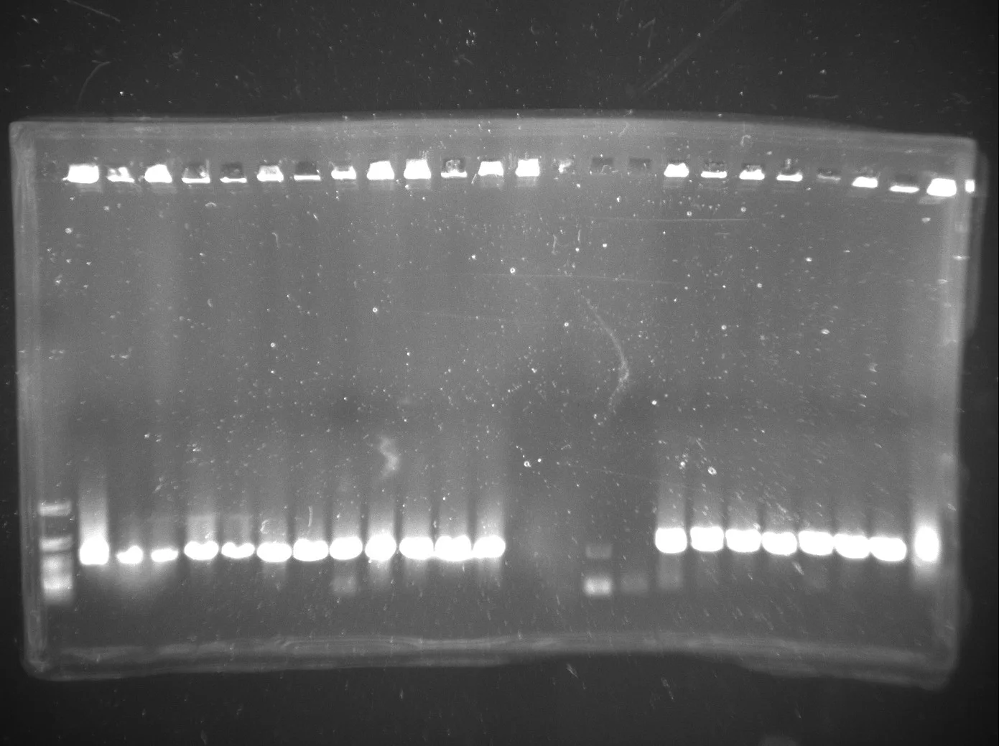
Show details The full design and build, and where the kit came from.
The coding sequences for the green and red light components, ccaR,
ccaSm3 and the ho1:pcyA operon, were taken from the
CcaS/CcaR characterisation of Castillo-Hair and colleagues [1] and paired with the
cargo sequences the project needed, LEA14, ACCD and BoPep4. To get those into
MoClo 2.0 as transcription units, each module was given a standard set of
regulatory parts, and every part got a custom primer pair carrying type IIS
sites: BbsI and BpiI for Level 0 entry, BsaI for Level 1, each flanked by
the standard overhangs. That hierarchy is the one the build kept, even after the kit
under it was swapped.
The mixtures were transformed into E. coli DH5α and plated on selective media, screened by colony PCR and read on agarose for insert size. Colonies with a band near an expected size were marked for miniprep and a confirming digest. Colony PCR and restriction digest both came back with high background: empty vectors and off-target bands that could not be told apart from an assembly failure or a PCR artefact.
The other half of the fix came from outside the team. Dr Joaquín Caro-Astorga supplied the SubtiToolKit [4], a bioengineering kit for Bacillus subtilis and Gram-positive bacteria. That was luck rather than planning, and it is recorded here as luck.
Each coding sequence was re-amplified into the kit’s syntax and parked in a plasmid before any Golden Gate reaction
- Result
- Seven coding sequences cloned into pGEM-T Easy, screened and sequence-confirmed, and four Level 1 transcription units screened clean at their expected sizes.
- Changed next
- A marker clash between the intermediate vector and every Level 1 destination.
Design
In response to the issue identified in DBTL cycle 1, we realized that an intermediate cloning step, in which the inserts are first cloned into Level 0 vectors, was necessary. Since we had unreliable outcomes in our earlier assembly, including inconsistent colony PCR results and unconfirmed clones, we revisited the cloning strategy at the PCR and vector-entry stage to improve reliability before moving into Level 1 Golden Gate assembly. The overall part composition for each module remained unchanged from DBTL 1; the redesign targeted the intermediate cloning steps used to generate clean, verified Level 0 parts.
Moreover, the lessons learned in the DBTL 1 cycle regarding low assembly efficiency of our desired Level 1 constitutive constructs led us to conclude that the circuits needed to be redesigned. We received the SubtiToolKit (STK) from Dr Joaquín Caro-Astorga [4]. Considering the poor assembly efficiency obtained with MoClo in DBTL cycle 1, we decided to switch to the STK system. To convert the coding sequence from our original MoClo design into an STK-compatible Level 1 part, we designed the forward primer (Ho1 F) and reverse primer (pcyA R) to PCR-amplify each CDS as a single amplicon directly from our existing MoClo construct: Ho1 F/pcyA R for the Ho1-pcyA fusion, ccaSm3 F/ccaSm3 R for ccaSm3, and ccaR F/ccaR R for ccaR. Additionally, we also had to PCR-amplify the promoter for our light-responsive expression module from the original MoClo construct utilizing PcpcG2-veg F/R. We designed the primers for each CDS with 5′ extensions containing the STK 4 bp overhang and a BsaI recognition site, and gene-specific annealing regions at the 3′ ends. Similarly, we designed the corresponding forward and reverse primers for each output module CDS (csn-ACCD and csn-LEA) following the same modular tail architecture as for other parts from MoClo: a 5′ spacer, a BbsI site defining the Level 0 positional overhang, a BsaI site defining the Level 1 positional overhang, and a gene-specific annealing region. However, to avoid delays while awaiting delivery of the STK, the parts were inserted into pGEM-T Easy instead of
pSTK-0.Build
We amplified each module’s coding sequence by PCR and cloned the amplicon into a pGEM-T Easy vector [5]. pGEM-T Easy provides a direct, rapid method for cloning PCR products through TA cloning: the vector is supplied pre-linearized with single 3′-thymidine (T) overhangs, which are complementary to the single 3′-adenosine (A) overhangs left on PCR products by Taq and other non-proofreading polymerases. This complementarity allows the amplicon to ligate directly into the vector without any additional processing, making it a fast and efficient intermediate cloning strategy compared to attempting Golden Gate entry directly from a PCR product.
We executed the Level 1 Golden Gate assembly following the SubtiToolKit workflow. The verified pGEM-T Easy Level 0 plasmid, along with STK library parts as well as MoClo 2.0 converted STK parts, were assembled into the corresponding
pSTK-1vector. Specifically, we used Level 1 vectorspSTK-1A-sfGFP,pSTK-1B-sfGFP,pSTK-1C-sfGFPandpSTK-1D-sfGFPfrom the STK library for our PCB-production module, light-sensing module, transduction module and light-responsive expression module, respectively. We utilized the type IIS restriction enzyme BsaI to digest the plasmids and T4 DNA ligase to ligate the fragments in a single one-pot reaction. The resulting Golden Gate assembly reaction mix was transformed into E. coli DH5α competent cells and selected on ampicillin media based on the insert vector.Test
Colonies from the pGEM-T Easy transformations were screened by colony PCR, and PCR products were run on an agarose gel alongside a DNA ladder to assess assembly success. A correct colony PCR band was one that ran at the expected size, calculated as the length between T7 promoter and SP6 promoter amplified by the screening primers; this confirms that a DNA fragment of the correct length was successfully ligated into the vector at the expected position. Colonies producing a single, clean band at this expected size were considered positive candidates for the correct insert. In contrast, colonies producing bands of incorrect or unexpected sizes were classified as negative and excluded from further analysis, since these patterns indicate either an empty vector or a truncated or mis-priming product rather than the intended insert.
Subsequently, colonies from Level 1 Golden Gate transformations were likewise screened by colony PCR. Then, either purified plasmid DNA or liquid cultures were sent for Sanger sequencing to confirm the success of the assembly of the independent modules in our optogenetic system.
Learn
The pGEM-T Easy TA cloning step proved to be a fast and reliable way to generate verified Level 0 entry material before doing Golden Gate assembly. Because colony PCR alone can only confirm that an insert of approximately the correct size is present, and cannot rule out point mutations or small indels introduced during PCR amplification, we relied on sequencing rather than enzyme digestion to confirm the fidelity of each cloned insert; we did not perform additional restriction digest verification at this stage, since correct band size on colony PCR, combined with full-length sequencing, was considered sufficient to confirm the sequence accuracy of each insert before proceeding to Level 1 assembly.
This step did add an extra day to our workflow compared to attempting direct entry from the PCR product, since colonies had to be picked, screened, and miniprepped before sequencing. However, it reduced the ambiguity we had encountered in DBTL cycle 1, where using PCR products directly made it harder to distinguish true assembly failures from PCR artifacts.
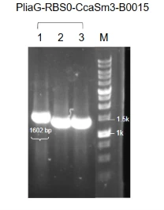
pSTK-1B-PliaG-RBS0-CcaSm3-B0015, three colonies screened with the
pSTK-seq primers. Lane 1 is a single band at the expected 1,602 bp.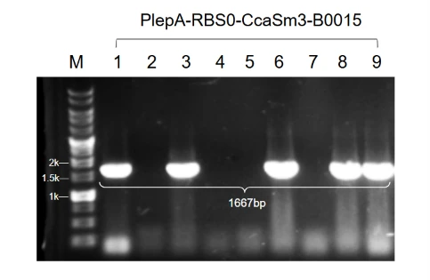
pSTK-1B-PlepA-RBS0-CcaSm3-B0015, nine colonies screened with the
BioBrick prefix and CcaSm3 rv primers. Lanes 1, 3, 6, 8 and 9 carry the expected
1,667 bp band. Both promoters gave a clone, which is why Level 2 was later run
twice.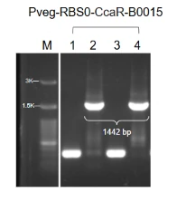
pSTK-1C-Pveg-RBS0-CcaR-B0015, four colonies on the pSTK-seq
primers. Lanes 2 and 4 are at the expected 1,442 bp; the low bands in 1 and 3
are the pattern a vector with no insert gives.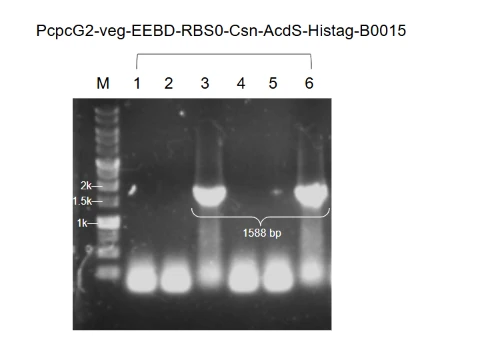
pSTK-1D-PcpcG2-veg-EEBD-RBS0-Csn-AcdS-Histag-B0015, six colonies
on the PcpcG2-veg fw and ACCD rv primers. Lanes 3 and 6 are at
the expected 1,588 bp. This is module 4 carrying the wild-type cargo.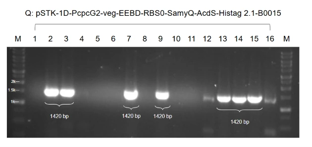
pSTK-1D-PcpcG2-veg-EEBD-RBS0-SamyQ-AcdS-Histag-2.1-B0015, sixteen
colonies on the SamyQ-seq-fw and pSTK-seq-rv primers. Lanes 2, 3, 7, 9 and 13 to 15 carry
the expected 1,420 bp band. The cargo here is the codon-optimised ACC deaminase that
pipeline 2 designed.Show details The primers that carried a MoClo part into the kit, the seven pGEM-T Easy sets, and what each module does.
The four Level 1 destination vectors came out of the kit unchanged, one per
transcription unit. What had to be made was the parts to go in them: each coding
sequence was re-amplified off the MoClo construct with a new primer pair, so that a
fragment designed for one standard came out carrying the syntax of the other.
Ho1 F anneals on the start codon of ho1 and
pcyA R past the 3′ end of pcyA, so the whole
operon comes off as one amplicon; ccaSm3 and ccaR were
amplified the same way. The 29 bp tail is identical on all six. Thirteen primers
is the whole set, described part by part on Parts.
| Primer | Sequence, 5′ to 3′ |
|---|---|
| Ho1 F (forward) | ATATATGAAGACATCTGAGGTCTCATATGTCAGTAAATTTAGCATCA |
| pcyA R (reverse) | ATATATGAAGACATGAGGGGTCTCATGTCTTACTGGATGACATCAAA |
| CcaSm3 F (forward) | ATATATGAAGACATCTGAGGTCTCATATGGGAAAATTTTTAATTCCAATT |
| CcaSm3 R (reverse) | ATATATGAAGACATGAGGGGTCTCATGTCTTAAGCTCGAGGCAAATGGT |
| CcaR F (forward) | ATATATGAAGACATCTGAGGTCTCATATGAGAATTCTTTTAGTGGAGGAT |
| CcaR R (reverse) | ATATATGAAGACATGAGGGGTCTCATGTCCTAGTTTTTCCCTTGGCACAA |
| Csn F (forward) | ATATATGAAGACATCTGAGGTCTCATATGAAAATCAGTATGCAAAAAGCA |
| ACCD R (reverse) | ATATATGAAGACATGAGGGGTCTCATGTCTTAATGATGATGATGATGAT |
| Lea R (reverse) | ATATATGAAGACATGAGGGGTCTCATGTCTTAATGATGATGATGATGAT |
| PcpcG2-veg F | ATATATGAAGACATCTGAGGTCTCAAGAGAGCCCATTGTGCT |
| PcpcG2-veg R | ATATATGAAGACATGAGGGGTCTCAATGTCCACCTCACTACATTTATTA |
The four modules divide the work of the circuit. The PCB production module initiates chromophore production by expressing the heme oxygenase 1 and phycocyanobilin:ferredoxin oxidoreductase fusion enzyme, which converts endogenous cellular heme into active phycocyanobilin, the chromophore the photoreceptor needs: Ho1 oxidizes heme to biliverdin IXα, and PcyA then reduces the biliverdin to PCB. The light-sensing module contains the ccaSm3 gene, an optimized variant of the green-light responsive histidine kinase photoreceptor CcaS. Instead of being induced by xylose or IPTG as in Castillo-Hair 2019 [1], this module is driven by the constitutive promoters PlepA and PliaG, so the receptor is expressed constantly and the system responds continuously to green light. The transduction module encodes the CcaR response regulator; on photon absorption the activated CcaSm3 kinase transfers a phosphoryl group to CcaR, switching it into its active, DNA-binding state. The light-responsive expression module carries the target gene cassette behind the green-light inducible promoter PcpcG2-veg. Phosphorylated CcaR binds that promoter to drive expression of the protectant only when green light is present, which reduces leakage and lowers the metabolic burden on the bacteria when plants are not under stress. We equipped an E. coli expression blocking device as our composite ribosome binding site to prevent leakage of toxic genes before the construct reaches B. subtilis.
| Module | Promoter | RBS | CDS | Terminator |
|---|---|---|---|---|
| PCB production | Pveg | RBS0 | Ho1:pcyA | B0015 |
| Light sensing | PliaG | RBS0 | CcaSm3 | B0015 |
| Light sensing | PlepA | RBS0 | CcaSm3 | B0015 |
| Transduction | Pveg | RBS0 | CcaR | B0015 |
| Light-responsive expression | PcpcG2-veg | EEBD-RiboJ-RBS0 | Csn:AcdS | B0015 |
| Light-responsive expression | PcpcG2-veg | EEBD-RiboJ-RBS0 | Csn:AcdS 2.1 | B0015 |
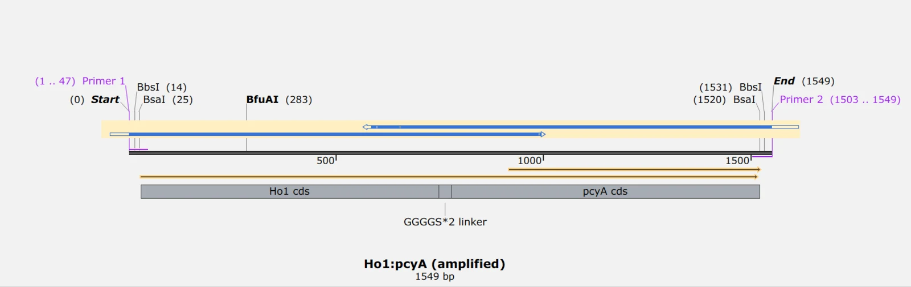
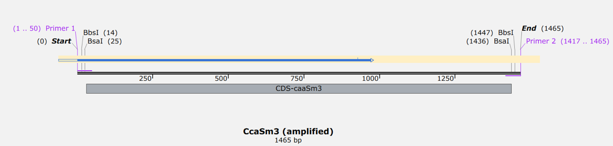
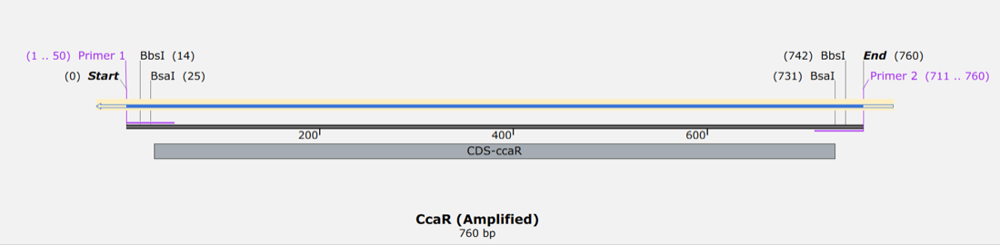
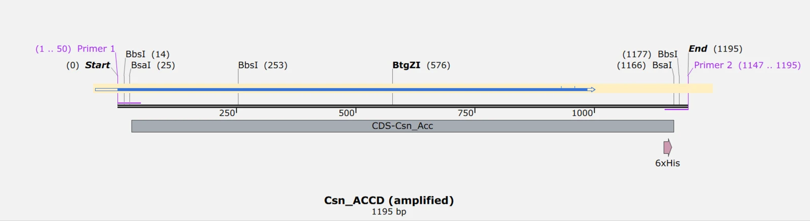
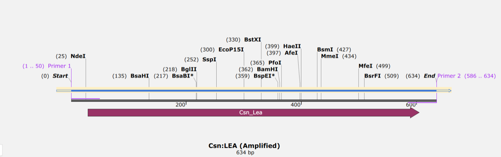
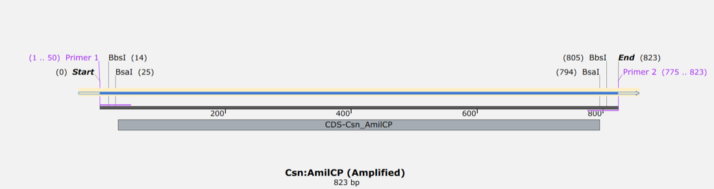
The six amplicons that went into pGEM-T Easy, as designed. Each carries the same tail at both ends: a spacer, a BpiI site that sets the Level 0 overhang, and a BsaI site that sets the Level 1 position.
| Set | Insert | Expected |
|---|---|---|
| A | pGEM-Teasy-Csn:Lea | 811 bp |
| B | pGEM-Teasy-Csn:AmilCP | 1,000 bp |
| C | pGEM-Teasy-Csn:Accd | 1,372 bp |
| D | pGEM-Teasy-CcaSm3 | 1,642 bp |
| E | pGEM-Teasy-CcaR | 937 bp |
| F | pGEM-Teasy-Ho1:pcyA | 1,726 bp |
| G | pGEM-Teasy-PcpcG2-veg | 412 bp |
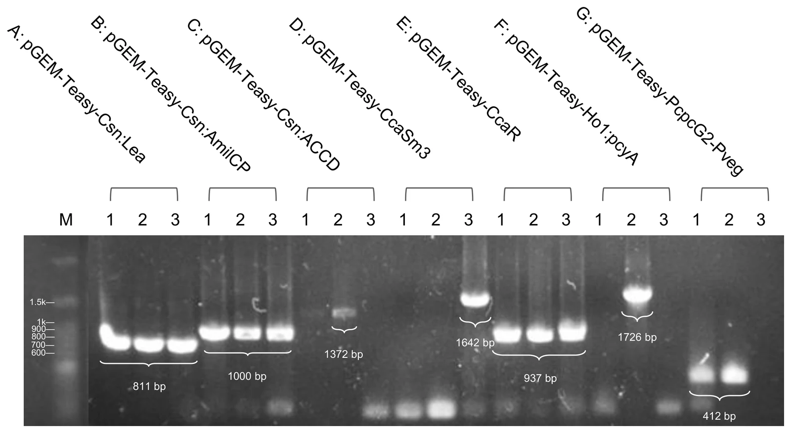
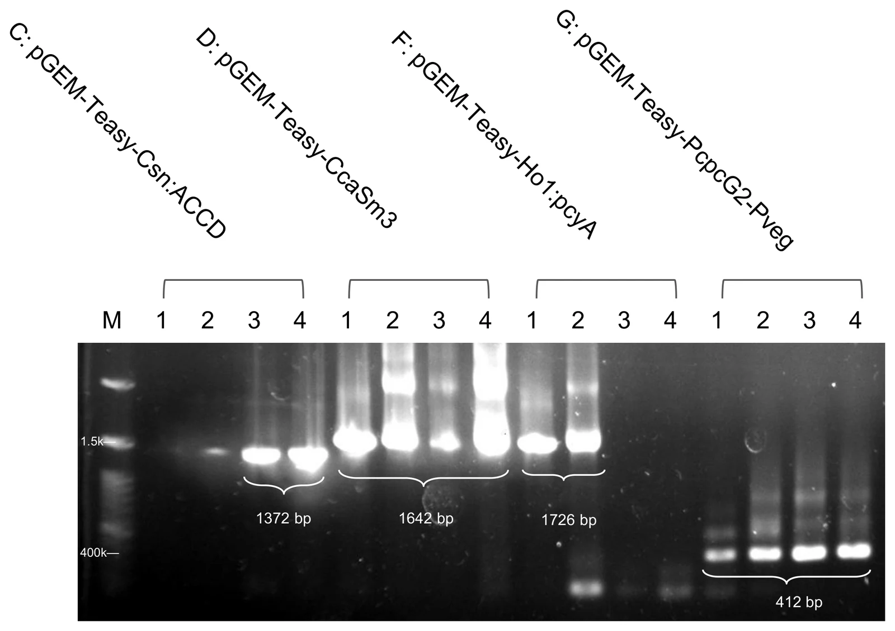
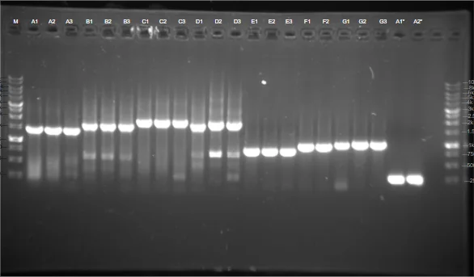
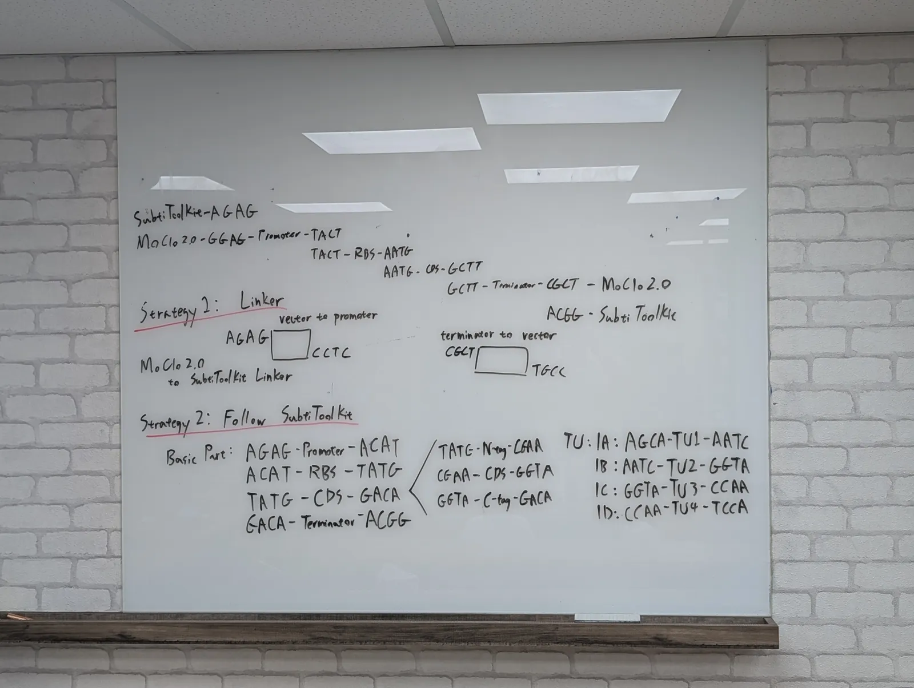
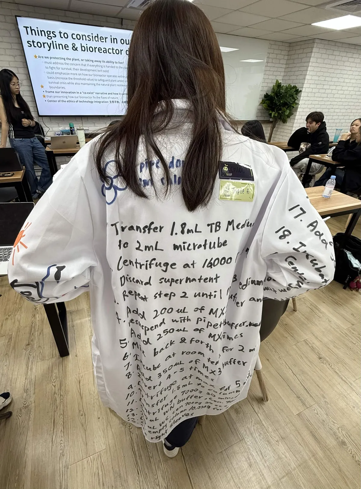
Both pGEM-T Easy and every Level 1 destination vector carry ampicillin
- Result
- The intermediate that fixed cycle 1 could not be selected against at Level 1. Rebuilt on the kit’s own entry vector, all sixteen Csn:LEA14 colonies and 22 of 23 BoPep4 colonies gave the expected band.
- Changed next
- Repeated regulatory parts across the modules became a stated recombination worry.
Design
After DBTL 2, we further optimized our STK cloning strategy (v2) in response to a compatibility issue identified with the pGEM-T Easy intermediate cloning step: the pGEM-T Easy vector uses the same antibiotic resistance gene (ampicillin) as our Level 1 destination vectors (1A, 1B, 1C, 1D), which complicated downstream selection and increased the risk of background contamination from carryover vector during Golden Gate assembly. To resolve this, we redesigned our cloning approach to construct each module’s coding sequence directly using STK Level 0 primers, skipping the pGEM-T Easy intermediate altogether. This step was only relevant to the CDS not cloned into pGEM-T Easy, as the ones from DBTL 2 were still usable in Level 1 Golden Gate assembly.
Build
We amplified the coding sequence directly with primers carrying the STK Level 0 (BbsI) and Level 1 (BsaI) tail architecture, as described for Modules 1 to 4, and cloned the amplicon directly into the Level 0 entry vector
pSTK-0Crather than through pGEM-T Easy. This removed the antibiotic resistance conflict, sincepSTK-0and our Level 1 destination vectors use distinguishable selection markers (chloramphenicol versus ampicillin), allowing a more obvious difference between correctly assembled Level 1 clones and the vector.Test
To verify the Level 0 parts cloned directly into
pSTK-0C, colonies were screened by colony PCR. All 16 colonies screened forpSTK-0C-Csn:LEA14gave a single band at the expected 811 bp. For the SamyQ-Bopep4 2.1-Histag constructs, 18 of 19 colonies carrying the 2.1 variant gave the expected 536 bp band, with lane 6 excluded because its band was a different size, and all 4 colonies carrying the 2.2 variant gave the expected band. A second screen of additional 2.2 variant colonies also gave bands at 536 bp. Colonies with a single band of the expected size were considered positive candidates.Learn
Although this approach resolved the antibiotic resistance conflict, a separate concern arose regarding potential recombination events in Bacillus subtilis [7]. Because several of our modules share repeated regulatory sequences (for example Pveg, RBS0, B0015) across multiple constructs, we became concerned that homologous recombination between repeated elements, once all four modules were combined in B. subtilis, could destabilize parts of the assembled optogenetic circuit, potentially weakening the CcaS/CcaR signals. Specifically, if a construct contains repeating sequences, such as duplicated promoters or terminators, the host’s recombination system can recognize them as matching regions and recombine them. This deletes the DNA lying between the repeated parts, rearranging the construct or shuffling them so that the cells end up carrying a shortened or altered version of the original design. These deletion variants can take over the culture, leading to loss of expression and inconsistent results between experiments. This concern motivated us to reconsider the repeated part usage across our modules going into the next design cycle.
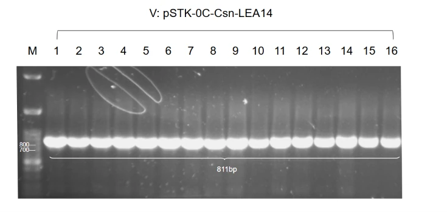
pSTK-0C-Csn-LEA14, sixteen colonies screened
with Csn fw and pSTK-seq rv, every one at the expected 811 bp. The same gel
was labelled 785 bp in an earlier draft; 811 bp is the figure the team’s
current writing carries, and it agrees with the Csn:Lea pGEM-T Easy set.Show details The two BoPep4 screens from the same day, and the redesign this cycle handed to cycle 4.
Only the coding sequences that had not already been cloned in cycle 2 were affected; the ones already in pGEM-T Easy were still usable at Level 1.
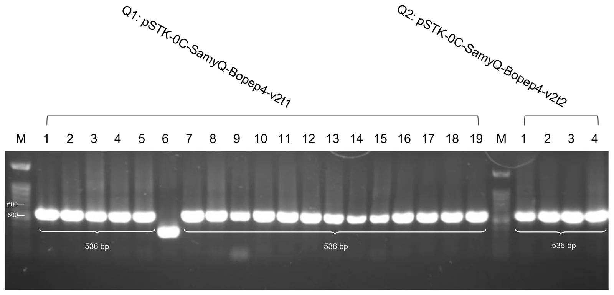
pSTK-0C-SamyQ-Bopep4-v2t1, Q1(1) to Q1(19), and
v2t2, Q2(1) to Q2(4), both at 536 bp with STK-seq-fw and
STK-seq-rv. Q1-4, Q1-10 and Q1-19 went to liquid culture.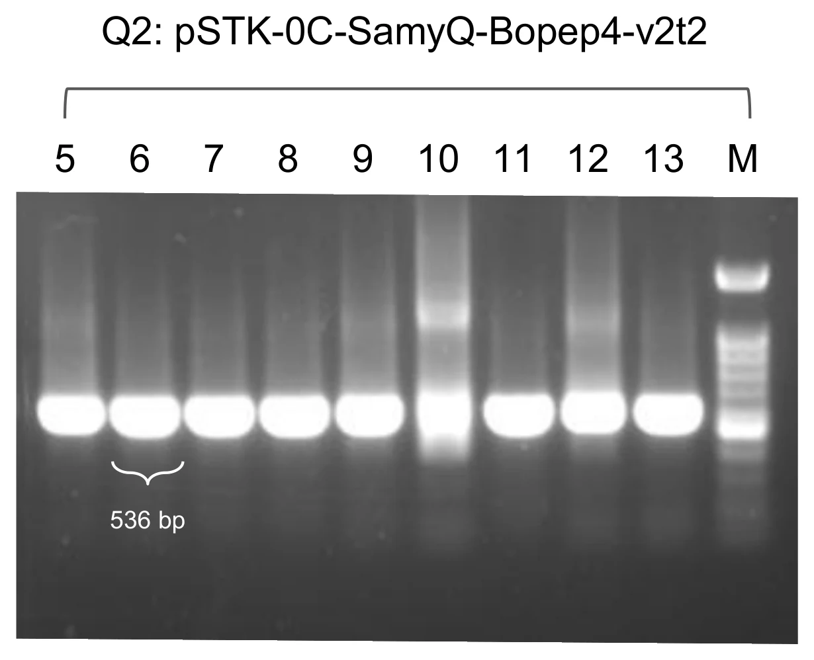
Once all four modules sat in one cell, long stretches of identical sequence could give recombination something to act on, and the CcaS/CcaR signal path is exactly what would be damaged. The redesign written at the end of this cycle is one line: diversify the promoter, ribosome binding site and terminator across the modules so that no two of them share a long identical stretch. That is what cycle 4 was run on.
Module 1’s repeats came out, and then the recombination premise did not survive
- Result
- Eleven of twelve colonies carrying the rebuilt module 1 gave the expected 1,833 bp band, and clone 1 was sequence-verified and used for Level 2.
- Changed next
- Level 2 assembly, electroporation into B. subtilis and testing on the light plate.
Design
To address the recombination risk identified in DBTL 3, we developed a third version of our SubtiToolKit design (v3) aimed at reducing sequence redundancy across the four modules of our optogenetic circuit. Rather than reusing identical regulatory parts (promoter, RBS, terminator) across multiple modules, we diversified these elements in module 1 to minimize the length and number of repeated sequences that could serve as substrates for homologous recombination in B. subtilis.
Build
We modified the affected constructs by substituting the promoter, RBS, and/or terminator with alternative STK parts for module 1, distinct from those used elsewhere in the circuit, while preserving its coding sequence. This was intended to maintain equivalent transcriptional and translational output while breaking up long stretches of sequence identity shared between modules.
Test
We screened 12 colonies carrying the redesigned module 1 (PtagC+RBS-Ho1:pcyA-L3S2P21) by colony PCR with the BioBrick prefix forward primer and the STK-seq reverse primer. 11 of the 12 colonies gave a band at the expected size of 1,833 bp, and only colony A11 failed. Clone 1 was then sequence verified and later used for Level 2 assembly.
Learn
This DBTL cycle of our optogenetic light circuit allowed us to finally move onto assembling our Level 2 constructs, followed by electroporation into Bacillus subtilis and LPA testing in order to verify the production of protectants by light signals.
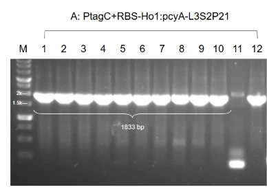
Show details What was varied and what was not, and the advice that undid half the motive.
The team’s own cloning-progress table is the clearest statement of what was varied, with the three regulatory slots pulled apart. Only the promoter, the ribosome binding site and the terminator ever moved; no coding sequence changed in this cycle.
| Module | Round | Promoter | RBS | Terminator | What it turned on |
|---|---|---|---|---|---|
| 1 · PCB production | first | Pveg | RBS0 | B0015 | No successful clone on the first way of cloning it. |
| second | PtagC | RBS | L3S2P21 | The second round gave a successful clone. Promoter strength stays pending because the first version was never obtained. | |
| 2 · light sensing | first | PlepA | RBS0 | B0015 | Promoter strength. Both versions were built, and both exist. |
| second | PliaG | RBS0 | B0015 | PliaG is the one sequencing confirmed first. | |
| 3 · transcriptional output | only | Pveg | RBS0 | B0015 | No change at any point. |
| 4 · output | only | PcpcG2 | RBS0 | cold D, then back to B0015 | The terminator swap was made against recombination and then undone. |
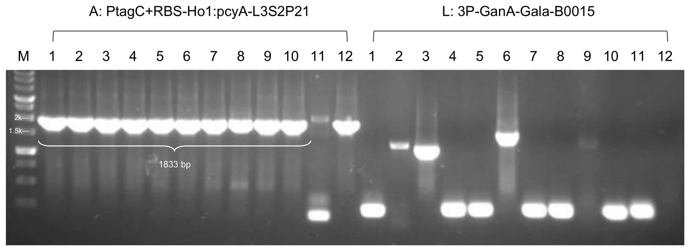
Module 4: Original terminator cold D (Failure) to B0015. Because Professor Huang thinks recombination in Bacillus is not the issue, we changed our terminator back to our original plan, B0015.
So the cold double terminator survives as an artefact of a redesign we undid. The other half of the motive stands on its own: module 1 sequenced clean on Pveg and RBS0 and gave no expression signal, and the rebuild is the part of this cycle we kept.
Four modules into one 10 kb plasmid, confirmed by junction and by digest, and never sequenced end to end
- Result
- Three ACDI clones checked at all three internal junctions on 19 September, and two clones cut to 10,293 bp with EcoRI and to 7,543 bp with EcoRI and BtsI. The plasmid moved into B. subtilis 168 and then WB800.
- Changed next
- The light plate run that would test the switch. It has since run, and Results carries it.
Design
Having successfully verified the independent Level 1 modules (PCB production, CcaS light sensing, CcaR transduction, and ACC deaminase light-responsive expression) through colony PCR and sequencing in previous cycles, the next objective was to combine them into a fully functional, multi-gene optogenetic circuit. For Level 2 assembly, the four individual Level 1 transcription units needed to be cloned into a single Level 2 shuttle vector from the STK library. The design also integrated experimental validation in two Bacillus subtilis strains. We initially enacted functional testing using our 168 strain, but we later received the B. subtilis WB800 strain from Professor Huang, which has eight extracellular proteases deleted (NprE, AprE, Epr, Bpr, Mpr, NprB, Vpr and WprA) [12]. Because the 168 transformations were limiting our progress, we decided to use the WB800 strain as an alternative host for the Level 2 construct. The construct was left unchanged, and only the host strain and the electroporation conditions were reconsidered. WB800 is deficient in extracellular proteases, which is also expected to benefit a secreted output such as ACC deaminase. Because ACC deaminase is a secreted, His-tagged output, a protease-deficient host reduces degradation after secretion and makes the protein easier to detect on Western blots.
Build
To construct the integrated Level 2 optogenetic system, we performed Golden Gate assembly, combining the sequence-verified STK Level 1 transcription units: the PCB production module, the ccaS-m3 light sensing module, the ccaR transcriptional module, and the PcpcG2-veg light responsive expression module. Following cloning in E. coli and sequencing confirmation, the fully assembled Level 2 expression plasmid was electroporated into Bacillus subtilis strains 168 and WB800 at 2.1 kV to 2.3 kV.
The two Level 2 devices, identical except for the cargo in module 4. Module 1 Module 2 Module 3 Module 4 PtagC+RBS-Ho1:pcyA-B0015 PliaG-RBS0-CcaSm3-B0015 Pveg-RBS0-CcaR-B0015 PcpcG2-veg-EEBD-RBS0-Csn:AcdS-Histag-B0015 PtagC+RBS-Ho1:pcyA-B0015 PliaG-RBS0-CcaSm3-B0015 Pveg-RBS0-CcaR-B0015 PcpcG2-veg-EEBD-RBS0-SamyQ:AcdS 2.1-Histag-B0015 Test
Three consecutive Golden Gate rounds returned nothing with no design change between them. On 28 August the insert-to-vector ratio was swept at 1:5 and 1:7 and both returned positives at all three junctions. The assembled plasmid was then cut with EcoRI alone and with EcoRI and BtsI together, and both clones gave the sizes a correct assembly predicts. Colonies from Bacillus subtilis electroporation plates were inoculated and grown at 37 °C overnight. To test the optogenetic functionality of the integrated circuit, cells were cultured and run under our light plate apparatus to differentiate the production of ACC deaminase under red light and green light.
Learn
Although successful, we ultimately learnt that the electroporation of Level 2 Golden Gate assembly constructs was extremely difficult, as the constructs are over 10 kb, and that in future we should look towards other alternatives such as natural transformation, which might have made the process easier and faster. Furthermore, we also learned that in the process of determining whether or not we have the correct construct, one module being positive does not necessarily determine the state of the rest of the modules; as a result, it is imperative that we validate the accuracy of all modules following the cloning process.
Unfortunately, we were unable to recover the ABDI strain (Csn:AcdS wild type) in liquid culture from its glycerol stock, so we inoculated cultures directly from colonies on the electroporation plate instead. Although this worked, it means that future experiments should rely on freshly transformed colonies, and we will need to revisit our glycerol stock preparation and storage to make the strain reliably recoverable.

No Level 2 construct has been sequenced end to end. The junctions and the double digest both say the four modules are in the right order and the plasmid is the right length; neither reads the 10 kb between them, and the build record’s Level 2 sequencing cell is empty for both devices.
Show details The ratio sweep, the double digest, the two devices, and a Western blot that does not separate green from red.
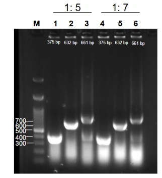
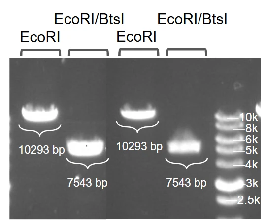
Module 2 was built on two promoters and both survived, so the Level 2 assembly was run twice: ACDI carries the PlepA photoreceptor and ABDI the PliaG one. Until a graded induction curve exists there is no way to choose between them, so both were carried. ABDI is the weaker of the two: clone V7 has been checked one junction at a time on separate gels and never all three at once.
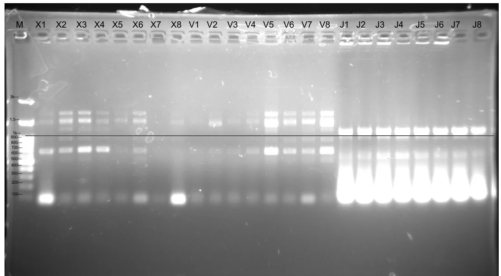
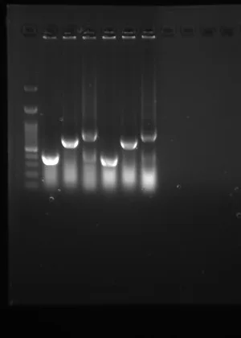
One oddity is on record and unexplained. On our Western blots, the Level 2 Csn-AcdS-Histag construct ran at a lower apparent molecular weight than the Level 2 SamyQ-AcdS 2.1-Histag construct. Because the only change made to the latter was a codon optimization, the total base pairs are the same in both. We hypothesize that it may reflect differences in how the protein assembles: ACC deaminase can form oligomers, and the Csn-AcdS construct may represent a dimer, whereas the SamyQ-AcdS 2.1 one may form a higher order oligomer or aggregate that runs larger. We were not able to quantify aggregation, so this theory remains untested. Importantly, the larger SamyQ-AcdS 2.1 is still active as shown by our DNPH assay results, which suggests that the size difference does not prevent ACC deaminase function.
The constitutive output module
Every cargo the light circuit was meant to carry was also built behind the constitutive promoter Pveg, in a shuttle vector that replicates in both organisms. The point is separation of causes: if a protectant cannot be detected, this pipeline says whether the problem is the protectant or the switch in front of it. Two reporter cycles failed before the cargoes themselves were built, and the last two cycles leave the assembly alone and work on the cargo sequence itself.
A chromoprotein would have made a correct clone visible, and no correct clone was ever obtained
- Result
- Gels gave fragments close to the expected size and sequencing showed they did not carry the construct. After repeated attempts with different chromoproteins we concluded the AmilCP build had not succeeded.
- Changed next
- A reporter that does not fold fast inside the cell: ganA-galA.
Design
Since we were unable to directly detect our protectants by visual or colorimetric assays in Bacillus subtilis, we first used a chromoprotein as a reporter to validate the feasibility of our circuit. A chromoprotein provides visible coloration and measurable absorbance, so a colony can be judged by eye then quantified on a plate reader without waiting for a Western blot. Thus, we designed the expression modules with the constitutive promoter Pveg to continuously drive the expression of the AmilCP reporter chromoprotein in Bacillus subtilis. The AmilCP was designed to fuse with the secretion signal peptide (SamyQ or Csn) for protein secretion with a C-terminal 6×His tag. We chose AmilCP because it produces a visible blue-purple coloration and has a high extinction coefficient, which allows detection at low expression levels.
To test secretion and not only expression, AmilCP was fused to a secretion signal peptide with a C-terminal 6×His tag, so that the protein could be tracked both by colour and by anti-His Western blot. We tested two signal peptides, SamyQ and Csn, because the best signal peptide for our protectants was unknown and the reporter allowed us to compare them on the same cargo protein. This visible phenotype also allows us to easily identify correctly assembled constructs without requiring additional assays, and it served as a test trial for how a secreted protein would behave in our bioreactor before we committed the protectants to it.
The two constructs designed in this cycle. Construct Vector Architecture 1 pSTK-EXP1-sfGFPPveg-EEBD-RBS0-SamyQ-TAT-HA-AmilCP-B0015 2 pSTK-1D-sfGFPPveg-EEBD-RBS0-Csn::AmilCP-B0015 Build
To assemble the desired constructs from the Level 0 parts, we utilized BbsI-mediated Golden Gate cloning to transfer our desired construct into
pSTK-0-sfGFP, replacing the sfGFP dropout cassette. The Level 0 plasmids were transformed into chemically competent E. coli DH5α, where they were isolated and then sequence-verified. We then proceeded from Level 0 to Level 1 by combining the verified cassettes with pSTK parts (Pveg, EEBD-RBS0 and B0015) and thepSTK-EXP1-sfGFPdestination shuttle vector in a BsaI-mediated Golden Gate reaction. The resulting plasmids were again transformed into E. coli DH5α, screen-confirmed by miniprep digestion, and prepared for downstream expression and functional testing.The structural components of the circuit are as follows. The shuttle vector
pSTK-EXP1-sfGFPdelivers and expresses the cassette within B. subtilis, and Pveg constitutively drives production of the reporter, which gives us a positive control and allows expression to be monitored. EEBD-RBS0 contributes two things: the ribosome binding site, which sets the translation initiation efficiency and therefore helps predict the production yield, and the E. coli Expression Blocking Device, a double terminator that prevents toxic protein from accumulating in E. coli during cloning. Once the construct enters B. subtilis, the blocking element is removed and normal expression is restored. Construct 1 was built in the shuttle vector so that the same construct could be transferred from E. coli into B. subtilis once its function was confirmed. Construct 2 was built directly inpSTK-1D-sfGFPand later transferred into the Level 2 vectorpSTK-2D-sfGFP.Test
To verify the assembly of our constructs, we used colony PCR, gel electrophoresis, and sequencing. Colonies obtained from the transformation were screened by colony PCR to confirm that the reporter cassette had been incorporated into the vector, and the PCR products were analyzed on an agarose gel to check that the fragments matched the expected size of around 8,000 bp, which rules out colonies with incomplete or incorrect assembly. Among the screened transformants, colony D is an example of an assembly of our desired circuit; it shows a successful attempt at assembling the circuit.
When the products were sent for sequencing, the results showed significant problems with our cloning and building process. Many gels showed fragments close to the expected size, but sequencing showed that they did not contain the construct we wanted. After repeated attempts, including trials with different chromoproteins, we concluded that we had not succeeded in constructing our desired chromoprotein.
Learn
The repeated unsuccessful cloning showed us that a band of the expected size on a gel was not enough to tell a correct clone from an incorrect one, so sequencing had to remain our deciding check. We also noted that AmilCP folds rapidly inside the cell, which could reduce its secretion through the Sec-dependent pathway, so it may not be the best reporter for secretion in any case. We therefore looked for a reporter that avoids these problems, which led us to ganA-galA in the next cycle.
This is the same lesson pipeline 1 learned at Level 1, arrived at independently and on a different construct: the gel says a fragment of about the right length is present, and only sequencing says what it is.
A seven-part reaction, two redesigns and no sequence-verified clone, so the reporter strategy was dropped
- Result
- A 24-colony screen and a repeat showed no band at the size expected for the full cassette. Sequencing confirmed neither of the two redesigned constructs, L or M.
- Changed next
- Stop building reporters. Test the protectants directly, by Western blot and ELISA.
Design
Because AmilCP folds rapidly in the cell, it can be secreted inefficiently through the Sec-dependent pathway, leading us to search for a reporter that does not have this limitation. We chose ganA-galA, which encodes a β-galactosidase and provides a rapid visual indicator of successful cloning, transformation, and gene expression without the efficiency problems we expected from AmilCP. This design allows researchers to easily identify correct constructs without requiring additional assays, and, as in the previous cycle, it serves as a test trial to visualize the growth and protein secretion of the given proteins within our bioreactor. The reporter was designed with the same architecture as the other constructs, so that the result could be compared directly with ACCD, LEA14 and BoPep4.
The construct designed in this cycle. Construct Vector Architecture 1 pSTK-EXP1-sfGFPPveg-EEBD-RBS0-ganA-B0015 Build
The construct was assembled with the same two-step Golden Gate strategy as in the previous cycle. The ganA insert was first transferred into
pSTK-0-sfGFPby BpiI-mediated Golden Gate cloning, replacing the sfGFP dropout cassette, and the Level 0 plasmid was transformed into chemically competent E. coli DH5α, isolated and sequence-verified. The verified part was then combined with Pveg, EEBD-RBS0 and B0015 and thepSTK-EXP1-sfGFPdestination shuttle vector in a BsaI Golden Gate reaction. The resulting plasmid was transformed into E. coli DH5α, screen-confirmed by miniprep digestion and prepared for expression testing. Because the cassette sits behind the EEBD, expression is blocked in E. coli during cloning and restored once the plasmid is moved into B. subtilis.Test
To verify the assembly of the ganA-galA constructs, we used colony PCR, gel electrophoresis and sequencing. The first Golden Gate reaction did not give a correct clone, so the assembly of
pSTK-EXP1-Pveg-EEBD-RBS0-ganA-galA-B0015was repeated twice. We then redesigned the cassette with a spacer upstream of ganA-galA and a 6×His tag downstream of it, and built two further versions, one behind the 3P promoter (construct L) and one behind PcpcG2-veg (construct M), both with the Csn secretion tag and the L3S2P21 terminator. Transformants were screened by colony PCR: a 24-colony screen and a repeat showed no band at the size expected for the full cassette, and the screens from September were followed by sequencing. Sequencing did not confirm either construct, and both L and M are recorded as unsuccessful.Learn
Because we were not able to obtain a sequence-verified ganA-galA clone, the reporter did not give us a readout. Building it was harder than building the other cassettes since each reaction combined seven parts, including a CDS of roughly 2 kb and the added spacer and His tag, and each redesign changed several parts at once, which made it difficult to tell which change helped. At the same time, the clones of our actual protectants were being sequence-verified without a reporter. The reporter strategy was therefore costing more time than it saved, and we concluded that we should test the protectants directly, using Western blot and ELISA to confirm their presence and secretion.
Every light-gated cargo was also built constitutively, and the ACCD strain went into the reactor
- Result
- Five output candidates built, screened and sequenced, then electroporated into B. subtilis and run in the bioreactor for 44 hours with a Western blot every two hours.
- Changed next
- Yield was low, which sent the cargo sequence itself to the dry lab. Building five modules on the same promoter, ribosome binding site and terminator is also what made pipeline 1’s recombination worry concrete.
Design
To construct our circuit’s output module, we designed a library of candidate constructs capable of expressing and secreting functional biotic and abiotic plant protectants. Because the optimal protectant-secretion signal combination could not be determined prior, we adopted a parallel design strategy built on a unified expression format: the constitutive promoter Pveg, a composite ribosome binding site (EEBD-RBS0), a secretion signal peptide (SamyQ or Csn) fused upstream of the protectant coding sequence, a His tag to view protein expression and the B0015 terminator. All constructs were designed for assembly directly into the
pSTK-EXP1-sfGFPdestination shuttle vector, enabling immediate expression in E. coli as well as downstream transfer into Bacillus subtilis. To integrate parts that were not from the SubtiToolKit library (ACCD), we designed custom primers following standard STK architecture: a 5′ spacer, a BpiI site, a BsaI site, and a gene-specific annealing sequence.Build
We assembled all candidate parts in two Golden Gate steps. First, we cloned each part into
pSTK-0-sfGFPby BpiI-mediated Golden Gate, replacing the sfGFP dropout cassette, then transformed the Level 0 plasmids into chemically competent E. coli DH5α, isolated them and sequence-verified them. Second, we combined each verified protectant cassette with Pveg, EEBD-RBS0, B0015 and thepSTK-EXP1-sfGFPdestination shuttle vector in a BsaI Golden Gate reaction. Ligated expression vectors were transformed into E. coli DH5α, screen-confirmed by miniprep digestion, and prepared for downstream expression and functional testing.Test
Transformant colonies across all five output candidates were initially screened via colony PCR and analyzed via agarose gel electrophoresis to confirm complete construct insertion into
pSTK-EXP1-sfGFP. Liquid was then cultured and sent for sequencing to confirm the existence of the correct inserts. Positive clones producing single, clean bands at expected amplicon sizes were then electroporated into Bacillus subtilis. Transformant colonies were screened by colony PCR to confirm the presence of the full-length output expression cassettes. Electrophoresis of PCR products on agarose gels yielded sharp, distinct bands at the expected sizes, matching our prior sequence-verification data in B. subtilis 168. Verified single colonies were inoculated into liquid media, which were then scaled up for downstream functional testing in our bioreactor. ACCD expression of the constitutive circuit was measured over the span of 44 hours, with liquid extracted every two hours from the shell site and lumen site of the bioreactor for a Western blot in order to optimize and quantify protein expression.Learn
Testing of our ACCD in our bioreactor provided critical insight into both expression levels and circuit stability. Using the Csn:ACCD construct allowed us to directly monitor protectant production and evaluate secretion efficiency; however, constitutive runs through our bioreactor and a Western blot revealed that the overall protein yield was relatively low and did not reach optimal physiological levels. This highlighted the need for future optimization of expression elements, such as promoter strength or codon optimization, to boost output efficiency for demanding protectants.
Furthermore, from an assembly perspective, although this cycle is mostly focused on the constitutive expression of ACCD, we were also working on our inducible system at the same time. Constructing multiple modules containing identical regulatory elements (Pveg, EEBD-RBS0, and B0015) highlighted an important concern. Reusing identical promoter and terminator sequences across all four modules of our full circuit created substantial sequence redundancy. When introduced into Bacillus subtilis, long stretches of sequence identity carry a high risk of triggering homologous recombination, which could destabilize or excise parts of our optogenetic circuit.
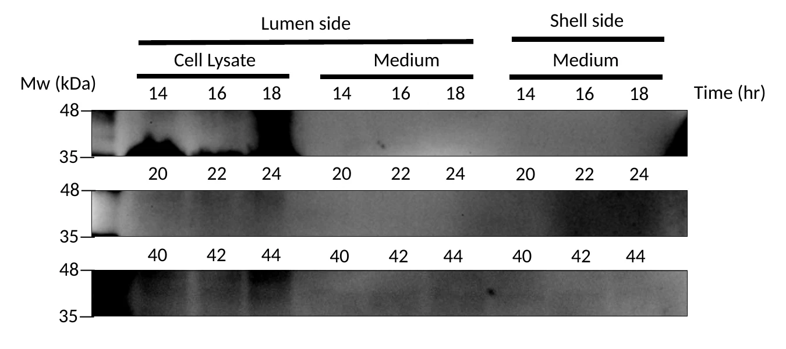
Show details The five-cargo library, the LEA arm that failed its digest, and a vector we built and then found we did not need.
Every cargo built behind PcpcG2-veg in module 4 was also built this
way, which is the second reason the series exists. All of them went into
pSTK-EXP1-sfGFP, so the same plasmid could be screened for expression in
E. coli and then carried into B. subtilis unchanged. Four parts
the library needed were not in the kit at all, Csn, ACCD, LEA14 and BoPep4, and each
got a custom primer on the standard four-element tail.
The five constitutive constructs
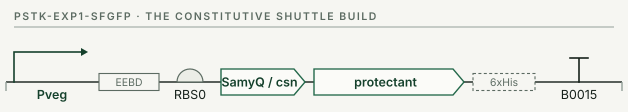
| # | Architecture | Purpose | Where it got to |
|---|---|---|---|
| 1 | Pveg → EEBD → RBS0 → SamyQ-TAT-HA-AmilCP → B0015 | Visible reporter | Never sequence-confirmed, cycle 1. |
| 2 | Pveg → EEBD → RBS0 → Csn:ACCD → B0015 | The cargo carried forward | J9 sequenced clean, 27 July. |
| 3 | Pveg → EEBD → RBS0 → spacer → GanA-GalA-6×His → B0015 | Galactosidase arm | All twelve L lanes failed, 30 July. |
| 4 | Pveg → EEBD → RBS0 → Csn:Lea → B0015 | LEA14 protein | Screened at 1,372 bp, 25 July. |
| 5 | Pveg → EEBD → RBS0 → SamyQ-Bopep4-v2t1 → B0015 | The designed peptide | Level 0 at 536 bp, 14 August. |
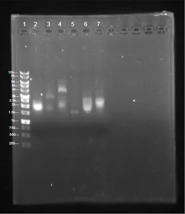
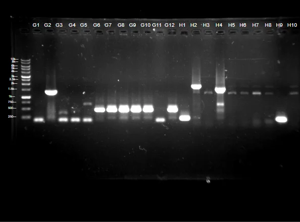
Low yield sent the cargo sequence to the dry lab, and eight recoded cassettes came back
- Result
- About 50,000 synonymous variants folded per construct. Eight cassettes ordered, with start-region accessibility up 1.3 to 1.9× and the Shine-Dalgarno core up 1.5 to 13× against wild type.
- Changed next
- A recalculation in the part we actually built cut the predicted gain, and the comparison the order set was designed for is still owed an assay.
Design
To improve protein secretion, we redesigned the codons at the start of the SamyQ-fused secretion cassettes for BoPep4, LEA14, ACCD and AmilCP. Codon choice influences expression through translation initiation, which depends on how accessible the ribosome binding site and start codon are in the mRNA, and elongation, which depends on host codon usage. The first codons after the ATG can base-pair with the RBS region and occlude the Shine-Dalgarno (SD) sequence, so we defined start-region accessibility as the design objective and monitored codon adaptation to B. subtilis as a constraint. Both aspects matter: the codon-optimised BoPep4 has a high codon adaptation index (CAI = 0.87) yet the lowest start-codon accessibility of all our constructs.
We modeled the 5′ end of each cassette with ViennaRNA 2.7.2 [8] at 37 °C. The folded region (Window A, 236 nt) comprised the B. subtilis dif recombination site (RS), MF001, a single A spacer placed between MF001 and the start codon, the SamyQ ORF (93 nt) and the first 90 nt of the CDS (143 nt for the Ho1 control). From the base-pair probabilities we calculated the mean unpaired probability over the SD core (AAGGAGG) and over the first 15 and 30 nt downstream of the start codon. We set start+15 ≈ 0.50 as the minimum acceptable value and used Ho1 (start+15 = 0.681) as a benchmark from a well-expressed gene.
Wild-type diagnostic across the RS-inclusive Window A. Start+15 and SD score are mean unpaired probabilities. Construct CDS starts with start+15 start+30 SD score CAI BoPep4 GILIG 0.396 0.414 0.067 0.87 LEA14 ASLLD 0.538 0.493 0.357 0.85 ACCD NLNRF 0.563 0.496 0.088 0.85 AmilCP VIAKQ 0.678 0.563 0.056 0.86 Ho1 (control) MSVNL 0.681 0.677 0.104 — Build
We recoded codons synonymously, comparing two designs while leaving protein sequences unchanged. In the CDS-only design (v2), the first 15 codons of the protectant were editable and SamyQ was left untouched. In the SamyQ + CDS design (v3), SamyQ codons 2 to 31 (ATG locked) were also editable, giving 45 editable codons; the SamyQ cleavage site and both amino acid sequences were verified as unchanged. For each construct we drew about 50,000 random synonymous variants and folded each one, excluding any that introduced a BsaI, EcoRI, XbaI, SpeI, PstI, NotI or HindIII site on either strand within the recoded span plus 8 nt of flanking sequence. This left 33,000 to 41,000 unique legal variants per construct, ranked by a balance score (start+15 plus SD core).
Eight cassettes were ordered as synthetic DNA, each a full PcpcG2-veg → B0015 construct of 715 to 1,657 nt differing from the wild-type cassette only by synonymous codon substitutions. BoPep4 and LEA14 use CDS-only designs, so they retain the validated SamyQ signal peptide; ACCD and AmilCP are each represented by both a CDS-only (v2) and a SamyQ + CDS (v3) design, which allows a direct test of whether editing the signal peptide improves or reduces expression and secretion.
The eight cassettes selected for ordering. CAI is calculated over the recoded SamyQ + CDS region; wild-type CAI is 0.85 to 0.87. Construct Length (nt) start+15 SD core Balance CAI GC (%) Codons changed, SamyQ / CDS BoPep4 2.1 715 0.497 0.634 1.131 0.77 42 0 / 9 BoPep4 2.2 715 0.432 0.658 1.090 0.77 44 0 / 8 LEA14 2.1 1,096 0.669 0.307 0.976 0.81 40 0 / 6 LEA14 2.2 1,096 0.670 0.269 0.939 0.78 43 0 / 10 ACCD 2.1 1,657 0.773 0.203 0.976 0.75 43 0 / 12 ACCD 3.1 1,657 0.860 0.657 1.517 0.59 43 21 / 12 AmilCP 2.1 1,285 0.677 0.583 1.260 0.79 39 0 / 8 AmilCP 3.1 1,285 0.878 0.757 1.636 0.63 39 19 / 11 Test
Before wet-lab work, every reported candidate in the SamyQ-editable run (52 variants: the top 10, the wild type, the greedy control and the best-balance variant for each construct) was re-folded and re-checked for unchanged protein sequences and absence of the restriction sites listed above. All 52 variants passed. The best-balance variants increased start+15 by 1.3 to 1.9× and the SD core by 1.5 to 13× relative to wild type, and the predicted structures show the SD region becoming accessible in the optimized variants. The greedy low-GC control improved three of the four constructs but remained below the searched optimum, and for LEA14 it was worse than the wild type.
We initially designed the cassettes with MF001; however, we ran into difficulties when assembling them, so we changed to the STK EEBD-RBS0 part for the wet lab. After the change we recalculated the scores with RiboJ + RBS0 in place of MF001 and the A spacer. The SD core of the wild types was 0.301 to 0.496 behind RiboJ + RBS0, compared with 0.056 to 0.357 behind MF001 and the RS. Adding the RS changed the SD core by 0.441 on average with MF001, by 0.048 with the as-built inverted element, and by 0.009 with the published orientation.
Learn
Editing SamyQ in addition to the CDS opened the start region considerably more than editing the CDS alone, but at a cost in codon adaptation. For ACCD, start+15 increased from 0.563 (wild type) to 0.773 with the CDS-only design and to 0.860 with SamyQ + CDS, while CAI decreased from about 0.85 to 0.75 and then 0.59. AmilCP showed the same pattern. For BoPep4, CDS-only editing raised start+15 only from 0.396 to 0.497, still just below 0.50, although the SD core rose from 0.067 to 0.634.
The recalculation with RiboJ + RBS0 showed that recoding still helps a little in the context that we built, but less than we predicted with MF001. Most of the large gain came from removing the pairing between the RS and MF001, which RiboJ prevents. The balance score was higher than the wild type for six of the eight ordered variants, and the two BoPep4 variants were the exception. Ho1 also changed from start+15 = 0.681 to 0.613 with RiboJ + RBS0, so we compared designs by rank and no longer use 0.50 as a fixed cut-off.
There are limits to this analysis. ViennaRNA diagnoses only translation initiation, and only for the processed mRNA, so a higher start+15 identifies a construct worth testing and does not predict yield. It does not capture secretion efficiency, SRP targeting or co-translational export, degradation by extracytoplasmic HtrA and HtrB (particularly for disordered proteins such as LEA14), or uptake in the rhizosphere. Recoding SamyQ preserves the signal peptide sequence and its cleavage site, but whether the altered 5′ mRNA structure and elongation speed affect secretion is a hypothesis, which the ACCD and AmilCP v2/v3 comparison is designed to test.
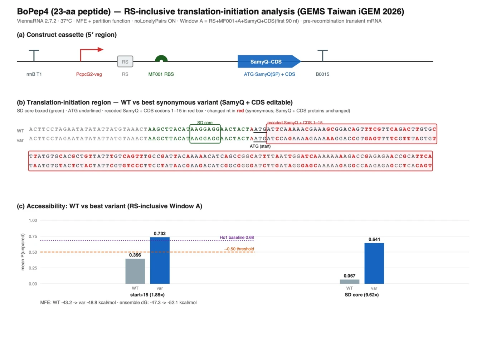
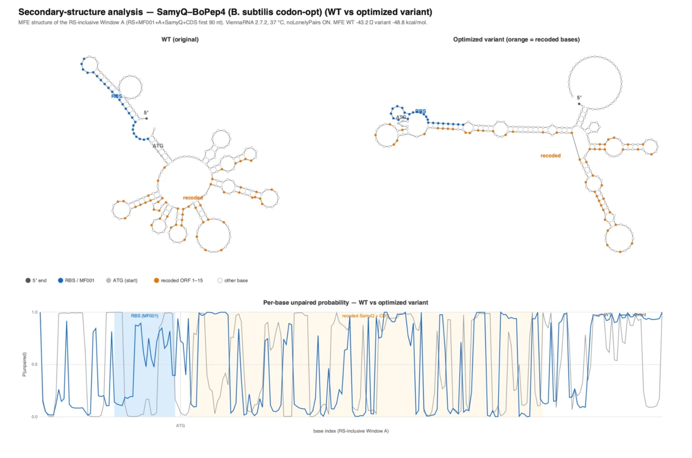
Show details Best-balance variants, the greedy control, and the recalculation in the element we actually built.
| Construct | start+15, WT to best | SD score, WT to best | CAI | SamyQ Δ / CDS Δ |
|---|---|---|---|---|
| BoPep4 | 0.396 to 0.732 (1.85×) | 0.067 to 0.641 (9.62×) | 0.61 | 26 / 13 |
| LEA14 | 0.538 to 0.841 (1.56×) | 0.357 to 0.534 (1.50×) | 0.69 | 23 / 9 |
| ACCD | 0.563 to 0.860 (1.53×) | 0.088 to 0.657 (7.45×) | 0.59 | 21 / 12 |
| AmilCP | 0.678 to 0.878 (1.30×) | 0.056 to 0.757 (13.45×) | 0.63 | 19 / 11 |
| Construct | RS + MF001, start+15 / SD / balance | RiboJ + RBS0, start+15 / SD / balance |
|---|---|---|
| BoPep4 WT | 0.396 / 0.067 / 0.462 | 0.608 / 0.378 / 0.986 |
| BoPep4 2.1 | 0.497 / 0.634 / 1.131 | 0.575 / 0.362 / 0.937 |
| BoPep4 2.2 | 0.432 / 0.658 / 1.090 | 0.527 / 0.399 / 0.926 |
| LEA14 WT | 0.538 / 0.357 / 0.895 | 0.604 / 0.301 / 0.905 |
| LEA14 2.1 | 0.669 / 0.307 / 0.976 | 0.664 / 0.309 / 0.973 |
| LEA14 2.2 | 0.670 / 0.269 / 0.939 | 0.663 / 0.314 / 0.977 |
| ACCD WT | 0.563 / 0.088 / 0.651 | 0.506 / 0.378 / 0.884 |
| ACCD 2.1 | 0.773 / 0.203 / 0.976 | 0.706 / 0.213 / 0.919 |
| ACCD 3.1 | 0.860 / 0.657 / 1.517 | 0.652 / 0.410 / 1.062 |
| AmilCP WT | 0.678 / 0.056 / 0.734 | 0.422 / 0.496 / 0.917 |
| AmilCP 2.1 | 0.677 / 0.583 / 1.260 | 0.520 / 0.441 / 0.960 |
| AmilCP 3.1 | 0.878 / 0.757 / 1.636 | 0.898 / 0.445 / 1.343 |
Two limits of the pre-order checks should be stated. The restriction-site scan covered the recoded window only, so it does not certify the whole insert, and it did not include BpiI or BsmBI. Codon adaptation was recorded but not constrained in this run, and the ordered set spans CAI 0.59 to 0.81 against 0.85 to 0.87 for wild type, with the two SamyQ + CDS designs lowest. A homopolymer scan was recorded as a sequencing-slippage warning rather than a rejection criterion: three of the eight cassettes carry a 6-A run in the recoded span, and the fixed wild-type SamyQ already contains a 5-A run. Because we moved from MF001 to the STK EEBD-RBS0 part during assembly, the synthesized DNA still carries MF001 and both RS copies; only the recoded SamyQ and CDS region was carried forward, and it was assembled behind RiboJ + RBS0.
The method, the full variant tables and the per-construct structures are on Protein Design and MD Simulations.
Ten variants of BoPep4 and LEA14, including two designed to lose activity
- Result
- Ten constructs designed and assembled in three Golden Gate steps. The activity assay that would rank them has not been run, so the panel is a design result and not yet a measurement.
- Changed next
- The assay, and a light-gated version of each variant in
pSTK-EXP2.
Design
To improve the function of experimental wild-type protectants used in the constitutive expression vector, we designed a panel of mutant and truncated variants of BoPep4 and LEA14, while additionally simulating those for ACC deaminase. All variants carried a C-terminal 6×His tag to enable detection and quantification by Western blot and ELISA.
Following the first engineering domain of BoPep4, we designed point mutations at two residues in the peptide region: S15A and G17A. Literature predicts S15A to be about 100× weaker and G17A about 4,000× weaker than the wild type [9]. These substitutions were not intended to improve the peptide. They were designed as reference controls for any future activity assay, chosen because the published AtPep1 literature already reports their effects. These loss-of-function variants act as a comparison for future activity tests, as a weak result from another variant can be judged against a documented loss-of-function peptide.
Truncations were our second engineering domain, focused on identifying a minimal functional region. After research and accounting for our goals, we chose the segments Δ7-23, Δ9-23 and Δ15-23 [10]. These three variants delete an increasing number of residues from the N-terminal side while maintaining the C-terminal region. By identifying the minimal active peptide, we can reasonably conclude an increase in secretion efficiency through the Sec pathway, allowing the peptides to travel faster from the bioreactor to the plant.
For LEA14 we followed published literature, with the truncations intended to remove the disordered regions at the N-terminus, as the tethered ends are susceptible to proteolysis. We generated the truncations Δ1-23 and the shorter Δ1-16 to identify how much of the N-terminus is removable without loss of function. The Δ146-151 construct removes the last six residues, which are tethered and hydrophobic, a common starting point for aggregation. For fusion protein engineering, we incorporated a motif that mediates membrane binding by fusing a K-segment (EKKGIMDKIKEKLPG) from a maize dehydrin to the N-terminus of LEA14 through a flexible GGGGS linker, accounting for its inability to bind independently. We also fused the K-segment construct with the Δ1-6 truncation to test whether the two modifications would act additively.
Build
We assembled the output module in three Golden Gate steps. First, we cloned the verified protectant inserts (SamyQ-AcdS 2.1, SamyQ-LEA14 and the BoPep4 variants selected in cycle 4) into
pSTK-0C-sfGFPby BpiI assembly, replacing the sfGFP dropout cassette. Then, we combined each Level 0 insert with the pSTK parts (promoter, EEBD-RBS0 and B0015) inpSTK-EXP1by BsaI assembly. Furthermore, we fused the protectant cassette with the CcaSR sensor module (ccaSm3 and ccaR) and the Ho1:pcyA chromophore module inpSTK-EXP2by BsmBI assembly, using a 1:7 vector-to-insert molar ratio that gave correct Level 2 assemblies in earlier trials. Each assembly was transformed into chemically competent E. coli DH5α and plated on selective medium, chloramphenicol for the Level 0 plasmids.Every mutation and truncation in the panel, with its purpose. Our own records give the His tag as C-terminal in the design text and N-terminal in the construct table, and the primer set carries BoPep4 in both orientations, so the tag position is not settled here. Protectant Construct Change Purpose BoPep4 S15A Ser15 → Ala About 100× weaker control BoPep4 G17A Gly17 → Ala Over 4,000× weaker control BoPep4 Δ9-23 Truncation Truncation version 1 BoPep4 Δ7-23 Truncation Truncation version 2 BoPep4 Δ15-23 Truncation Truncation version 3 LEA14 K-GGGGS-WT K-segment fusion Fusion of motif LEA14 K-GGGGS-Δ1-16 K-segment with truncation Fusion of motif and truncation LEA14 Δ1-16 Truncation Truncation version 1 LEA14 Δ1-23 Truncation Truncation version 2 LEA14 Δ146-151 Truncation Truncation version 3, aggregation prevention Test
We screened transformant colonies by colony PCR with Q-Amp master mix. For the Level 1 and Level 2 constructs the expected products are 678 bp (EXP fw and BoPep4 R) and 632 bp (L2 CcaSm3 F and L2 CcaR R). Cycling was 95 °C for 5 min, then 35 cycles of 95 °C for 20 s, 60 °C for 20 s and 72 °C for a time matched to amplicon size, then 72 °C for 5 min. Products were run on agarose gels beside a DNA ladder. Colonies giving a single band at the expected size were grown overnight, miniprepped and sent for sequencing with the pEXP and pSTK sequencing primers. Sequence-verified plasmids were electroporated into B. subtilis WB800 and re-screened by colony PCR.
Learn
The panel is designed so that a future activity assay has a known loss-of-function control to read against, which is the part of this cycle that will outlast the season. What the panel does not yet have is the assay. The plan is to grow verified transformants in the bioreactor under dark and red or green light, collect cell lysate and culture medium from the lumen and medium from the shell at each time point, and run anti-His Western blots to measure expression, secretion and diffusion, then compare each protectant against its constitutive version. The activity assays that would rank the truncations against S15A and G17A are not among the results we have.
Two of the ten constructs were built to be worse. S15A and G17A are reference controls, and until an activity assay runs beside them, nothing in this panel can be ranked.
Show details The cloning primers for the Level 0 conversion and for the secreted fusions.
| Part | Forward, 5′ to 3′ | Reverse, 5′ to 3′ |
|---|---|---|
| ccaR | ATATATGAAGACATCTGAGGTCTCATATGAGAATTCTTTTAGTGGAGGAT | ATATATGAAGACATGAGGGGTCTCATGTCCTAGTTTTTCCCTTGGCACAA |
| ccaSm3 | ATATATGAAGACATCTGAGGTCTCATATGGGAAAATTTTTAATTCCAATT | ATATATGAAGACATGAGGGGTCTCATGTCTTAAGCTCGAGGCAAATGGT |
| Ho1:pcyA | ATATATGAAGACATCTGAGGTCTCATATGTCAGTAAATTTAGCATCA | ATATATGAAGACATGAGGGGTCTCATGTCTTACTGGATGACATCAAA |
| MF001 (RBS) | ATATATGAAGACATCTGAGGTCTCAACATAAGCTTACATAAGGAGGAACT | ATATATGAAGACATGAGGGGTCTCTCATAAGTAGTTCCTCCTTATGT |
| MF002 (RBS) | ATATATGAAGACATCTGAGGTCTCAACATGCTAGCACATAAGGAGGAACT | ATATATGAAGACATGAGGGGTCTCTCATAAGTAGTTCCTCCTTATGTGC |
| L3S1P52-L3S2P56 | ATATATGAAGACATCTGAGGTCTCAGACAGCTTTCTAACTAAAAAGGCCT | ATATATGAAGACATGAGGGGTCTCACCGTCTCGGTACCAAATTTTCGAAA |
| P43 | ATATATGAAGACATCTGAGGTCTCAAGAGATTTTACATTTTTAGAAATGG | ATATATGAAGACATGAGGGGTCTCAATGTTTATATTTTACATAATCGCGC |
| PcpcG2-veg | ATATATGAAGACATCTGAGGTCTCAAGAGAGCCCATTGTGCT | ATATATGAAGACATGAGGGGTCTCAATGTCCACCTCACTACATTTATTA |
| PREF | ATATATGAAGACATCTGAGGTCTCAAGAGAATTTTGTCAAAATAATTTTA | ATATATGAAGACATGAGGGGTCTCAATGTACATTTATTTAACAACACGAG |
| PrpsD | ATATATGAAGACATCTGAGGTCTCAAGAGTTTTATTCTGAAGCAATAA | ATATATGAAGACATGAGGGGTCTCAATGTCTGCAATATTTCACACAAAGG |
| Pveg | TGACTGGGTCTCTGGAGGGAGTTCTGAGAATTG | TGACTGGGTCTCAAGTAACTACATTTATTGTACAACACGAG |
| Construct | Forward, 5′ to 3′ | Reverse, 5′ to 3′ |
|---|---|---|
| Csn-AcdS | ATATATGAAGACATCTGAGGTCTCATATGAAAATCAGTATGCAAAAAGCA (Csn F) | ATATATGAAGACATGAGGGGTCTCATGTCTTAATGATGATGATGATGAT (ACCD R) |
| SamyQ-AcdS | ATATATGAAGACATCTGAGGTCTCATATGATTCAAAAACGAAAGCGGAC (SamyQ F) | ATATATGAAGACATGAGGGGTCTCATGTCTTAATGATGATGATGATGAT (ACCD R) |
| Csn-LEA14 | ATATATGAAGACATCTGAGGTCTCATATGAAAATCAGTATGCAAAAAGCA (Csn F) | ATATATGAAGACATGAGGGGTCTCATGTCTTAATGATGATGATGATGAT (LEA R) |
| SamyQ-LEA14 | ATATATGAAGACATCTGAGGTCTCATATGATTCAAAAACGAAAGCGGAC (SamyQ F) | ATATATGAAGACATGAGGGGTCTCATGTCTTAATGATGATGATGATGAT (LEA R) |
| Csn-AmilCP | ATATATGAAGACATCTGAGGTCTCATATGAAAATCAGTATGCAAAAAGCA (Csn F) | ATATATGAAGACATGAGGGGTCTCATGTCTTAAGCAACAACCGGCTTTC (AmilCP R) |
| SamyQ-BoPep4, C-terminal His | ATATATGAAGACATCTGAGGTCTCATATGATTCAAAAACGAAAGCGGAC (SamyQ F) | ATATATGAAGACATGAGGGGTCTCATGTCATGATGATGATGATGATG (Bopep4 R) |
| SamyQ-BoPep4, N-terminal His | ATATATGAAGACATCTGAGGTCTCATATGATTCAAAAACGAAAGCGGAC (SamyQ F) | ATATATGAAGACATGAGGGGTCTCATGTCttaATTGTGTCCTCCCGGT (NHis-Bopep4 R) |
The biology behind the BoPep4 variants is on Protein Design; BoPep4 itself is a C-terminally encoded plant elicitor peptide from broccoli with a reported role in salinity stress tolerance [11].
Into B. subtilis
Neither of the other two pipelines produces anything until its plasmid is inside a Gram-positive cell, and standard transformation in B. subtilis varies too much between strains to rely on. Two cycles worked out electroporation conditions, one per strain, and the second is the reason the project changed host. The read-out is colonies recovered, counted plate by plate; the full set of counts is on Results.
Three voltages into strain 168, and colonies that were counted but never screened
- Result
- 21 colonies at 2.1 kV against 8 at 2.3 kV, on LBE agar, with the constitutive ACC deaminase construct.
- Changed next
- The DTU protocol did not work on WB800, so the second cycle changed the cell preparation and not only the voltage.
Design
The first design focused on introducing the construct Pveg-EEBD-RBS0-SamyQ-ACCD-v2t1-B0015 into Bacillus subtilis 168 through electroporation. The experiment aimed to evaluate whether the plasmid could be introduced successfully and determine which electroporation voltage produced the greatest number of bacterial colonies. Three voltages, 2.1 kV, 2.2 kV and 2.3 kV, were selected for testing. The resistance was maintained at 300 Ω and the capacitance at 25 µF. While standard transformation methods in Bacillus subtilis can be significantly constrained by strain variability in efficiency, electroporation provides a more controllable, high-efficiency technique critical for expressing recombinant stress-mitigating proteins [15].
Build
Electrocompetent Bacillus subtilis 168 cells were prepared following the protocol from the DTU-Denmark iGEM team [14]: the overnight culture was diluted 16-fold and grown at 37 °C and 200 rpm to OD600 0.85 to 0.95, cooled on ice for 5 minutes, centrifuged at 5,000 × g for 10 minutes, washed twice with ice-cold electroporation buffer and resuspended in one twentieth of the original culture volume. Aliquots were stored at −80 °C.
For the pulse, plasmid DNA was mixed with 100 µL of electrocompetent cells and transferred to a pre-chilled 0.2 cm cuvette. After the pulse, 2 mL of prewarmed SOC recovery medium was added immediately, the cells were recovered for 3 hours at 37 °C and 200 rpm, then plated on selective LB agar containing erythromycin or chloramphenicol and incubated overnight at 37 °C.
Test
Colonies were counted on each plate to compare transformation efficiency across the electroporation conditions. 2.1 kV gave 21 colonies and 2.3 kV gave 8, both on selective LBE agar.
Learn
The recorded colony counts suggest that 2.1 kV was associated with greater colony recovery than 2.3 kV in this experiment. However, the available results are insufficient to determine whether the recovered colonies carried the intended construct, because colony PCR results have not been provided for this run.
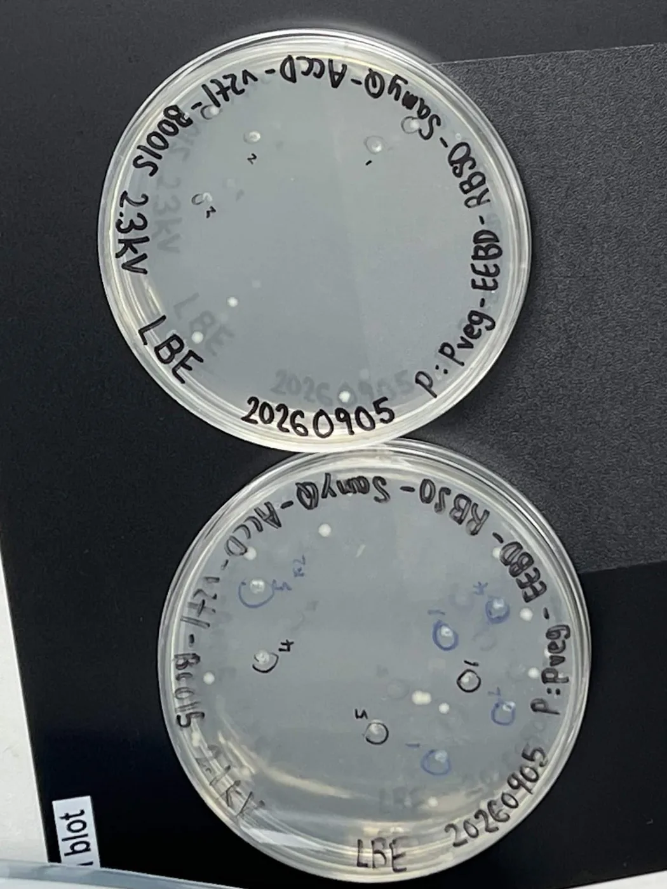
The 168 protocol failed on WB800, and the optimal voltage turned out to depend on the construct
- Result
- Four constructs transformed, including the 10 kb Level 2 circuit. The best voltage is 2.1 kV for the constitutive ACC deaminase construct, 2.3 kV for the CcaSR circuit, and 1.1 kV in a 0.1 cm cuvette for BoPep4.
- Changed next
- WB800 became the host for everything downstream, which is the strain change the bioreactor track picks up.
Design
The WB800 experiments investigated the introduction of several plasmid constructs into Bacillus subtilis WB800. The recorded constructs were Pveg-SamyQ:ACCD v2t1, Pveg-SamyQ:ACCD v2t2, pSTK-EXP2-CcaSRv1-AcdS-v2t1, Pveg-BoPep4_15-23 and NC4:Pveg-BoPep4_15-23 NHis. For the main WB800 electroporations we used 2.1, 2.3 and 2.5 kV in a 0.2 cm cuvette, with the resistance set to 250 Ω and the capacitance to 25 µF. The BoPep4 constructs were tested separately using a 0.1 cm cuvette and lower voltages of 1.1 and 1.5 kV. These experiments allowed colony recovery to be compared across different constructs and electroporation conditions.
Build
Electrocompetent WB800 cells were prepared following the protocol described by Lu and colleagues [13], which differs from the 168 preparation in three places: the culture is grown to OD600 2.2 instead of 0.85 to 0.95, the pellet is washed four times with ice-cold electroporation buffer containing 1.5 mol/L trehalose instead of twice with plain buffer, and the cells are resuspended in one fortieth of the original culture volume instead of one twentieth. The pulse, the 3-hour recovery in SOC and the selective plating are the same as for 168.
Pulse parameters by strain. Both strains were pulsed in a 0.2 cm cuvette except the BoPep4 constructs, which used a 0.1 cm cuvette at 1.1 and 1.5 kV. Strain Voltage tested Resistance Capacitance B. subtilis 168 2.1, 2.2, 2.3 kV 300 Ω 25 µF B. subtilis WB800 2.1, 2.3, 2.5 kV 250 Ω 25 µF Test
For Pveg-SamyQ:ACCD v2t1, plating at a 1:2,000,000 dilution gave high colony density at 2.1 kV, 434 colonies, and at 2.3 kV, 403. Raising the voltage to 2.5 kV cut viability to 15 colonies, and plating at 2.1 kV on an LBE plate without the high dilution gave 16. For Pveg-SamyQ:ACCD v2t2, undiluted plating at 2.3 kV gave 16 colonies, while the 1:2,000,000 dilution at 2.5 kV resolved 337.
The CcaSR circuit behaved differently. pSTK-EXP2-CcaSRv1-AcdS-v2t1 on LB agar peaked at 2.3 kV with 370 colonies, against 268 at 2.1 kV and 233 at 2.5 kV, so 2.3 kV was taken as optimal for that construct. The BoPep4 constructs in the 0.1 cm cuvette wanted lower field strengths still: Pveg-BoPep4_15-23 gave 6 colonies at 1.5 kV and 15 at 1.1 kV, and the NC4 version of the same construct gave 11 colonies at 1.1 kV.
Learn
We tested the 168 protocol on WB800 and it did not succeed, so we used the protocol published for WB800 instead. B. subtilis 168 is the standard wild-type laboratory strain, whereas WB800 is a 168 derivative engineered for secreted protein production by deleting eight extracellular proteases (nprE, aprE, epr, bpr, mpr, nprB, vpr, wprA) [12]. These deletions, including the cell-wall-associated protease WprA, likely make WB800 a more fragile strain with different growth physiology, so it tolerates the stresses of electroporation and freezing less well than 168. This might explain why the DTU 2015 protocol worked for 168 and failed for WB800.
Colony counts dropped at higher voltages, which suggests that excessive field strength causes cell lysis and sets a limit for these strains. The optimum is not one number: it moved from 2.1 kV to 2.3 kV between two constructs in the same strain and the same cuvette, and down to 1.1 kV once the cuvette gap halved.
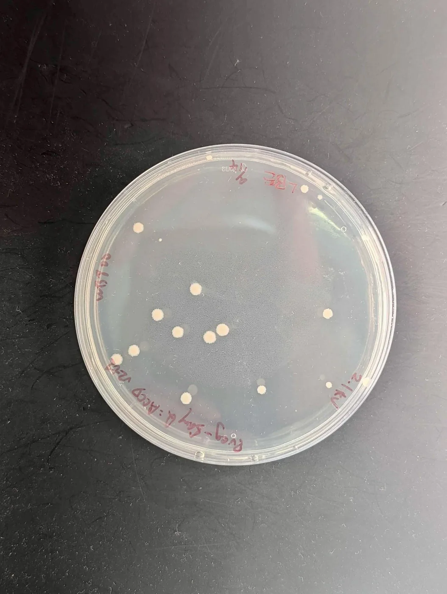
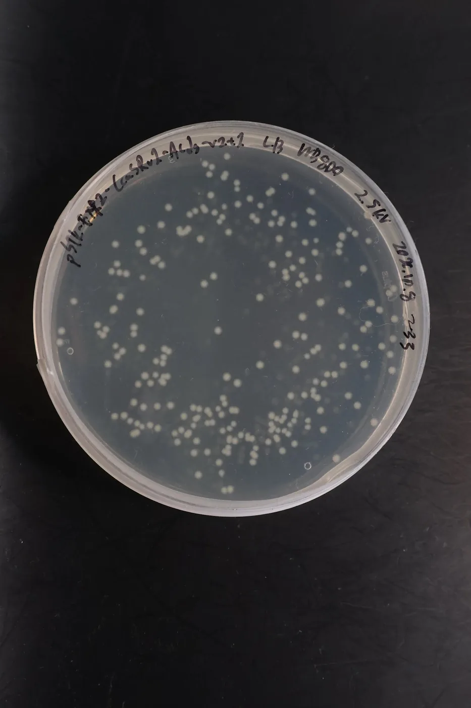
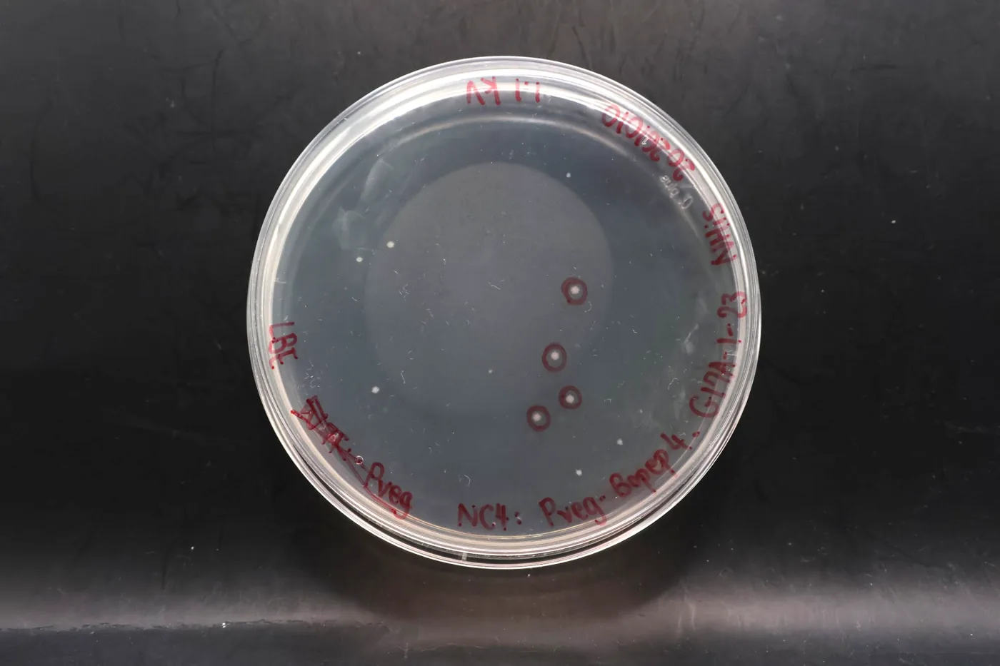
Show details Every condition and its count, the transformant screen, and what this pipeline contributes.
| Strain | Construct | Cuvette | Voltage | Plate | Dilution | Colonies |
|---|---|---|---|---|---|---|
| 168 | Pveg-SamyQ-ACCD v2t1 | 0.2 cm | 2.1 kV | LBE | none | 21 |
| 168 | Pveg-SamyQ-ACCD v2t1 | 0.2 cm | 2.3 kV | LBE | none | 8 |
| WB800 | Pveg-SamyQ:ACCD v2t1 | 0.2 cm | 2.1 kV | LB | 1:2,000,000 | 434 |
| WB800 | Pveg-SamyQ:ACCD v2t1 | 0.2 cm | 2.3 kV | LB | 1:2,000,000 | 403 |
| WB800 | Pveg-SamyQ:ACCD v2t1 | 0.2 cm | 2.5 kV | LBE | none | 15 |
| WB800 | Pveg-SamyQ:ACCD v2t1 | 0.2 cm | 2.1 kV | LBE | none | 16 |
| WB800 | Pveg-SamyQ:ACCD v2t2 | 0.2 cm | 2.3 kV | LBE | none | 16 |
| WB800 | Pveg-SamyQ:ACCD v2t2 | 0.2 cm | 2.5 kV | LBE | 1:2,000,000 | 337 |
| WB800 | pSTK-EXP2-CcaSRv1-AcdS v2t1 | 0.2 cm | 2.1 kV | LB | 1:2,000,000 | 268 |
| WB800 | pSTK-EXP2-CcaSRv1-AcdS v2t1 | 0.2 cm | 2.3 kV | LB | 1:2,000,000 | 370 |
| WB800 | pSTK-EXP2-CcaSRv1-AcdS v2t1 | 0.2 cm | 2.5 kV | LB | 1:2,000,000 | 233 |
| WB800 | Pveg-BoPep4_15-23 | 0.1 cm | 1.1 kV | LBE | none | 15 |
| WB800 | Pveg-BoPep4_15-23 | 0.1 cm | 1.5 kV | LBE | none | 6 |
| WB800 | NC4:Pveg-BoPep4_15-23 NHis | 0.1 cm | 1.1 kV | LBE | none | 11 |
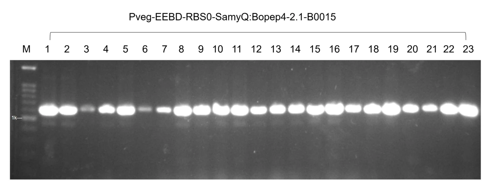
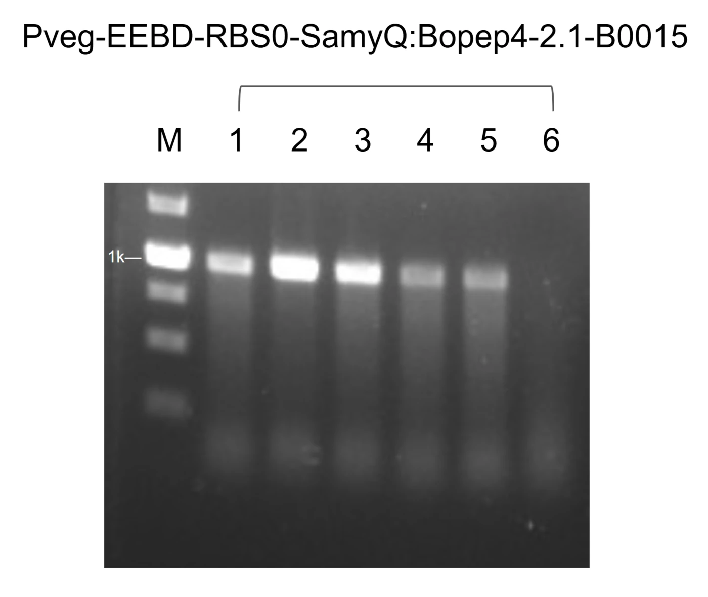
What this pipeline contributes
Strain-specific electrocompetent cell protocols. We established preparation workflows for B. subtilis 168 and WB800 that differ in the OD600 at harvest, the washing buffer and the resuspension volume. Optimized electroporation voltages for each strain, compared at fixed resistance and capacitance. Evidence of how voltage affects cell viability, since colony counts drop at higher voltages, which sets a practical limit and saves another team cells and plasmid. Demonstrated electroporation of multiple constructs, including the 10 kb CcaSR light sensor plasmid, which shows the protocol works across different plasmids and selection markers. The step-by-step procedure, covering cell preparation, the pulse, a 3-hour recovery, selective plating and colony counting, is on Experiments.
Bioreactor
A hollow-fibre loop that keeps engineered cells on one side of a membrane and lets the protectant across. Seven cycles, from a loop that leaked at the pump head to three integrated runs on cells, the last of them holding a culture of B. subtilis WB800 for forty-two hours with its pH corrected by hand. The reactor record sorts the same work into three tracks across three prototypes, and cycles 5 to 7 here are its three integrated runs. The machine those cycles converge on is specified end to end in the user manual and built stage by stage in the assembly guide, and where those documents and an older cycle disagree on a number, the cycle below says which one the machine has.
The loop reached its flow rate and then leaked at the pump head, and the culture barely grew
- Result
- 94 mL/min held, the run stopped early on a leak, and 2 mL of shell-side medium plated on LB grew nothing.
- Changed next
- Biocompatible tubing, a magnetic stirrer, and the sampling port moved to the reservoir outlet.
Design
Initially, the objective of our design was to establish a functional continuous flow system utilizing a PES hollow fiber membrane. This preliminary build provided initial insights into structural limitations and potential hardware optimizations. The design of our Bioreactor comprises a PES Hollow Fiber Membrane, medium reservoir, Peristaltic pump, and luer valve, offering a simple, continuous flow-through mechanism.
Build
Within this first cycle, we utilized a PES hollow fiber protein membrane (lumen volume: ~200 mL) connected to a 500 mL LB medium reservoir containing 300 mL of LB medium, inoculated with 20 mL of a multi-overnight B. subtilis liquid culture.
Test
Within early phase testing, the peristaltic pump achieved the target flow rate of 94 mL/min; however, the trial was prematurely terminated due to localized medium leakage within the peristaltic pump. We then evaluated microbial viability, yielding final OD600 readings of 0.304 (in-tube) and 0.48 (medium reservoir).
Learn
The divergent OD600 values between the tube and reservoir indicated poor microbial viability and pointed to two key hardware limitations for the next DBTL cycle. Exhibiting these factors, we hypothesize that the lack of active mixing led to nutrient stratification and cell sedimentation within the reservoir, limiting growth.
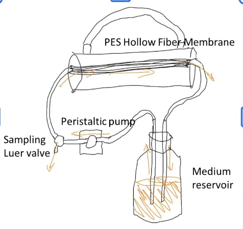
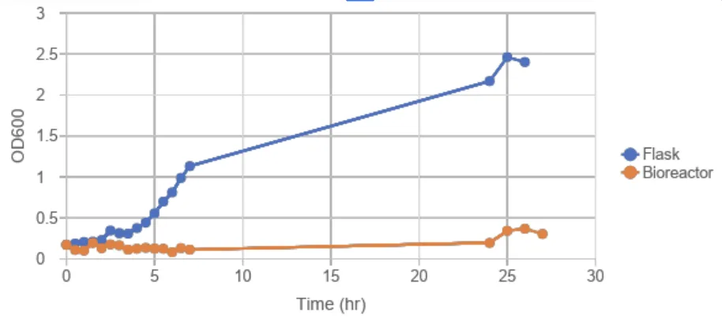
Show details The containment plate, and the three changes this cycle asked for.
To confirm the microbial presence and viability, 2 mL of the medium was extracted from the Shell side of the Hollow fiber membrane and was plated on LB agar to examine colony formation. From this, we observed the absence of colony formation, providing functional proof that our bioreactor is bio-safe for public agricultural usage.
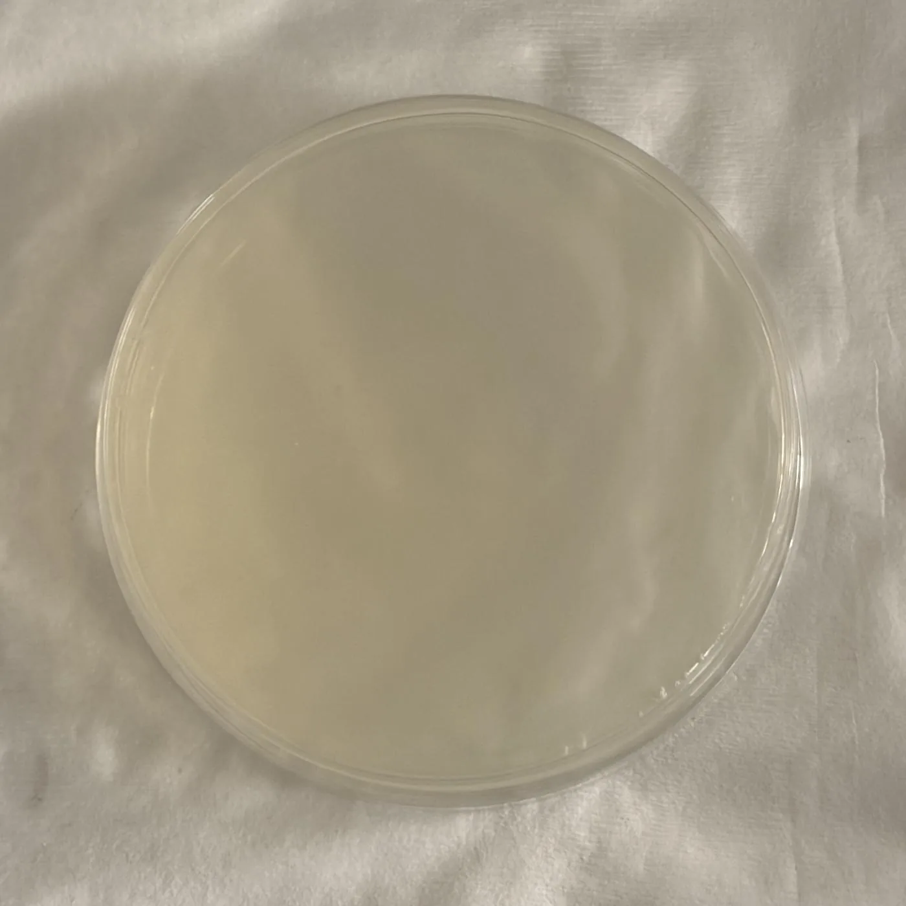
Furthermore, to overcome the observed lack of microbial growth, we plan to incorporate an active magnetic stirring mechanism, inspired by the Biology laboratory Hot plate magnetic stirrer, to prevent sedimentation and ensure a homogeneous nutrient distribution. In addition, to improve the data collection accuracy and minimize contamination risks, we plan to relocate our initial sampling ports directly to the medium reservoir’s outlet within our next DBTL cycle.
In order to address the mechanical leakage, we identified the need for biocompatible tubing (BPT) to ensure higher durability and more stable sealing between transition points of the pump.
What that plate can carry is narrower than the sentence above it. No replicate count was stated for it, and its incubation time and temperature were not recorded. The reactor record now counts two platings in all, the second run beside a lumen-side plate that grew, which is what makes an empty plate mean anything; it states no replicate count either. The barrier is also the only containment stage in the loop, and the 0.2 µm pore that holds cells back passes vesicles and cell debris.
The plate is a standing procedure now, no longer a result. The user manual asks for the shell side to be plated on the first run after every membrane change, and after any run in which the pressure trend changes, and for the harvested fluid to be treated as live culture until that plate has grown nothing. It says in as many words that the membrane separates by size and not by molecule: everything under the pore crosses, the product with it. Containment is the state of the module, the tubing, the connectors and the pump head around it, and it is re-established at each module change; June proved it once, for one module.
Stirring, 37 °C and a sampling port at the reservoir gave the first complete growth curve
- Result
- The reactor plateaued at OD600 0.8 to 0.9 after about two hours, against the flask’s 0.6 to 0.8 after four and a half.
- Changed next
- Run it again at 22 °C, on higher-durability BPT tubing.
Design
Improving on the previous design, a 200rpm magnetic stir was added to the medium reservoir to prevent sedimentation and ensure a homogeneous nutrient distribution. In addition, the sampling sector was placed closer to the medium reservoir to acquire a more accurate measurement as the reservoir holds much more relative volume compared to the hollow fiber membrane, giving us a more averaged prediction of the total OD of the entire bioreactor module.
Build
The same loop with the 200 rpm magnetic stirrer under the reservoir and the sampler moved to its outlet; the drawing below is the team’s own illustration of the prototype.
Test
As before, the peristaltic pump maintained the target flow rate of 94 mL/min for the entirety of testing. However, instead of experimenting with room temperature, the bioreactor(experiment) and flask(control) were maintained at 37 degrees Celsius. In contrast to our last attempt, this time the experiment ran successfully, helping us secure the full growth curve of our bacteria, with the bioreactor reaching the plateau phase (OD600 ~0.8-0.9) after 2 hours, and the flask reaching the plateau phase (OD600 ~0.6-0.8) after 4.5 hours.
Learn
The successful generation of the OD600 growth curve confirmed and justified that adding the continuous magnetic stirring mechanism is crucial to preventing sedimentation and maintaining optimal system efficiency.
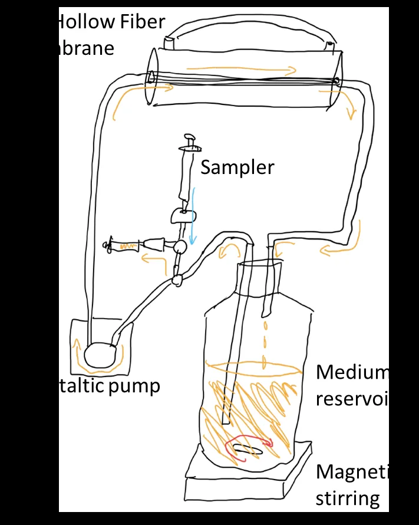
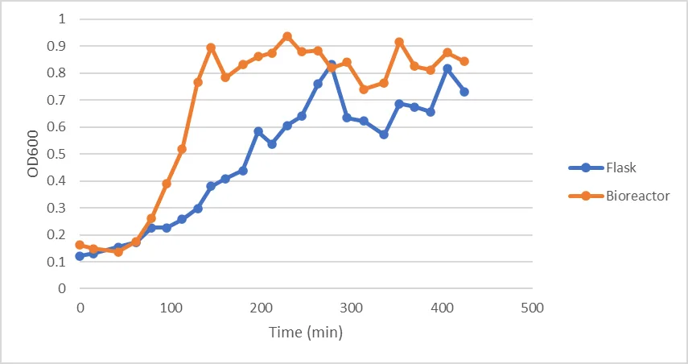
Show details What the team wrote about what comes next, and two things the cycle cannot say.
Moving forward, the next DBTL cycle will evaluate the system’s performance and growth kinetics at a reduced temperature of 22°C. Moreover, to ensure the long-term reliability of our Bioreactor and prevent tube degradation observed in earlier trials, upgrading to higher-durability BPT tubing is necessary for the next round of testing.
New tubing, the growth chamber temperature, and the photometer reading the loop instead of a pipette
- Result
- Steady growth at 22 °C through the photometer, with the leak and degradation problems gone.
- Changed next
- Instrument the loop: pressure, flow, and a valve that holds when the power is cut.
Design
The tubing was upgraded to biocompatible BPT tubing. The system was evaluated at a reduced operating temperature of 22 °C, placing our experimental setup within our plant growth incubator. Furthermore, this test would be utilizing our self-made photometer design.
Build
The loop went into the incubator with the printed photometer tower plumbed into the return leg, downstream of the pump, where a longer plumb gives the pump’s sawtooth room to smooth out.
Test
The run itself is the 400-hour photometer record in the photometer track.
Learn
Our B. sub is able to grow steadily while passing through our photometer, with our new tubing, at 22 degrees. It was dropped into the reservoir from a large height, creating slight bubbling that helped dissolve oxygen passively. The newly used BPT tubing resolved all leak and degradation issues.
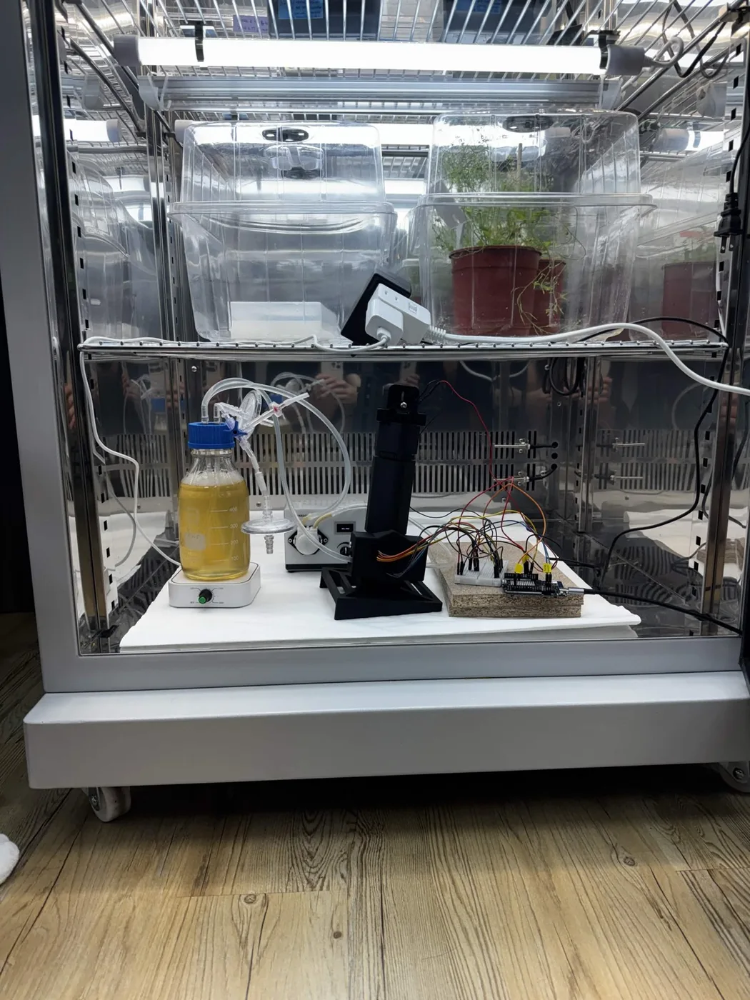
Show details One limitation the team wrote down, and one thing this loop did not have.
A limitation is that it took 200 hours to plateau due to a large drop that could’ve been caused by contamination.
The same drafts also record that this growth run used a simplified circulation loop with no hollow-fibre module in it, at about 23 °C, and the reactor record goes no further than putting the run “on the bioreactor loop” in the document’s own words. The longest recording it counts with the membrane module actually fitted is the hundred and sixteen hours of cycle 5. So what this cycle proves is the tubing, the temperature and the in-line measurement: a 22 °C growth curve on the membrane loop is still an open parameter, and the only growth curve the membrane loop has is at 37 °C. The drop it mentions is the unexplained dip discussed in the photometer track.
Scale settled by arithmetic, transmembrane pressure on a screen, and autonomy blocked on sterility rather than electronics
- Result
- Pressure, flow and a servo pinch valve went on. The magnetic pump and its reservoir were rejected, and neither probe could be got into a sealed vessel cleanly.
- Changed next
- Run every subsystem at once, on cells.
Design
Two questions settled before anything reached the bench. Scale: a hollow-fibre membrane has to run at a wall shear rate of 2,000 to 6,000 s−1, which fixes the cross-flow once the geometry is chosen. And the pinch valve actuator, scored against four criteria agreed before any option was looked at.
Build
A pressure transducer on the retentate side on 12 July, a servo replacing the stepper valve, the full rig assembled over four days in July, then a magnetic pump, a cooling reservoir and a cap bored for dissolved-oxygen and pH probes in August.
Test
Transmembrane pressure was on a screen the same evening the sensor went on, with a heavy pump sawtooth on the trace. The magnetic pump topped out below 200 mL/min against a recommended 263 mL/min and could not lift liquid out of the serum bottle.
Learn
Autonomy is blocked on sterility, not on electronics. Neither probe body survives autoclaving and the reservoir closes with a rubber septum, and no amount of firmware addresses that.
The answer in the end was to stop autoclaving the loop. The assembly guide sterilises in place: a litre of 3.5 % hydrogen peroxide circulated for fifteen minutes, drained, then a litre of distilled water at a time until no peroxide is left and the rinse comes back neutral, which in our hands is about four rinses. The photometer is blanked after that and never before. It keeps the probes and the glass out of an autoclave, and it moves the problem without solving it: this is chemical disinfection of an assembled loop, and the manual still treats everything the loop has held as biological waste at the end of a run.
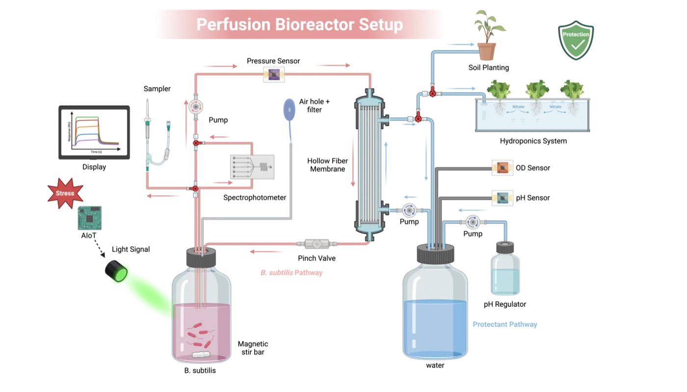
Show details The scale arithmetic, the valve criteria, what each prototype settled, and a documentation failure that changed a process.
| Strategy A, scale up | Strategy B, scale down | |
|---|---|---|
| Module | 63 mm by 300 mm, about 1,300 fibres | 10 mm by 600 mm, 11 fibres |
| Membrane area | 1.3 m² | 0.02 m² |
| Cross-flow at 2,000 s−1 | 16.25 L/min | 129 mL/min |
| Cross-flow at 6,000 s−1 | 48.74 L/min | 388 mL/min |
| Pump available | 1.5 L/min | within reach |
No test was run because none was needed: the arithmetic settles it by a factor of ten to thirty, and we scaled down. The valve went the same way. Four criteria were agreed before any option was scored, so they could not be bent toward the answer: does it hold when power is cut, how much holding force against permeate pressure, can we build it from parts already in the lab, and how much firmware does it need. A stepper releases when it loses power and the loop is full of live engineered culture, so the first criterion outranked the other three and decided it alone. We replaced a valve we had already built with a servo.
| # | Date | What changed | What it settled |
|---|---|---|---|
| III | 4 Jul | Module frozen at the small geometry | Scale settled on arithmetic; specification re-checked against invoices |
| IV | 12 Jul | Pressure transducer on the retentate side, 0 to 1 MPa, read through a divider | Transmembrane pressure on a screen the same evening, with a pump sawtooth on it |
| V | Jul | Servo pinch valve replacing the stepper | Holding on power loss |
| VI | 16 to 20 Jul | Full rig assembled over four days; module characterised on pure water across eight flow settings, twice | The rig ran; the record of building it did not |
| VII | 5 to 23 Aug | Magnetic pump, cooling reservoir, cap bored for dissolved-oxygen and pH probes | One accepted, two rejected; autonomy blocked on sterility |
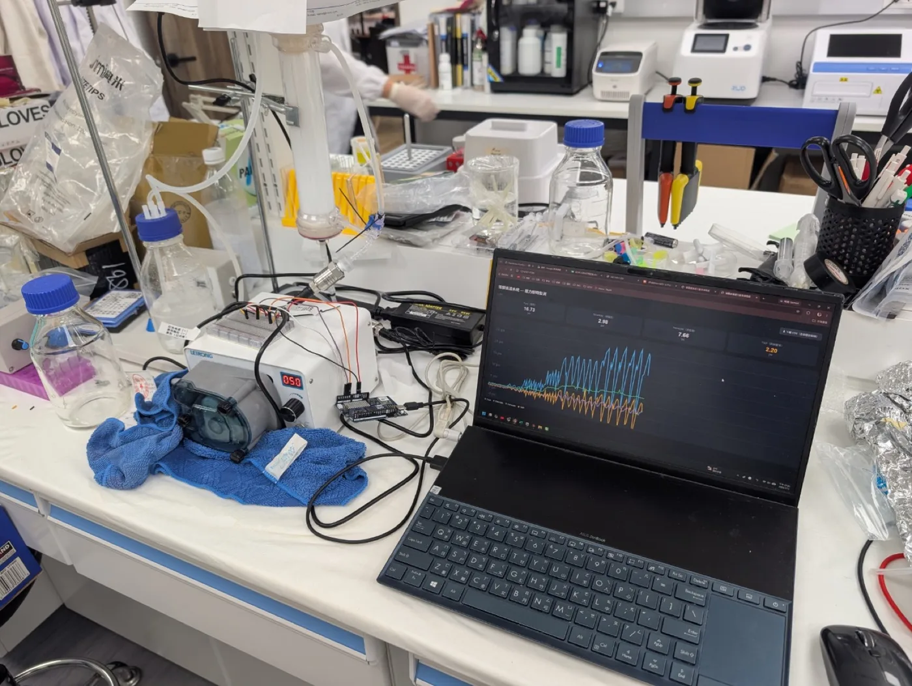
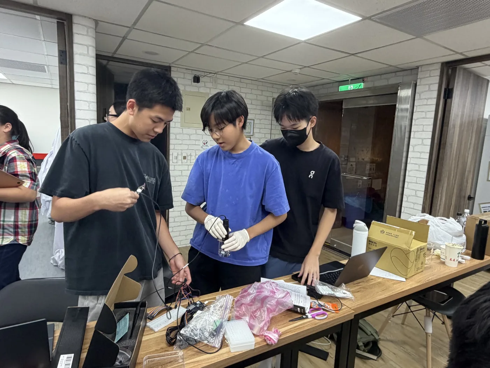

Freezing the specification meant checking every line against invoices instead of against memory, and two of our own recorded claims did not survive. The old specification said the membrane had a 50 kDa molecular weight cut-off and blocked outer-membrane vesicles. The module we actually own is 0.2 µm microfiltration, which passes small vesicles and cell debris along with the roughly 36 kDa ACC deaminase that is meant to pass. The barrier is cellular, not molecular, and we withdrew both claims in writing.
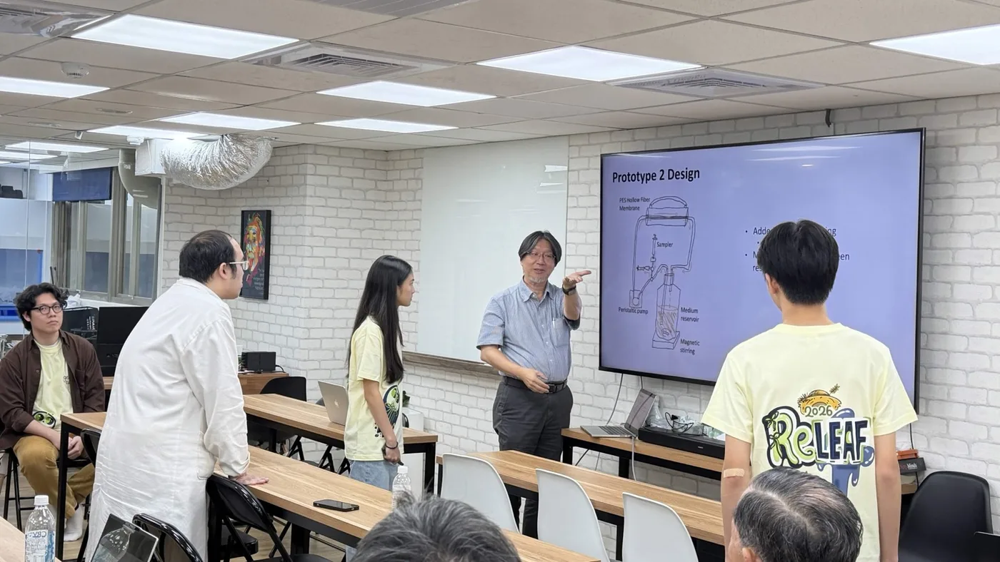
One failure here is a documentation failure and it changed a process. Prototype VI was photographed nineteen times across four days, with gaps, duplicates and no captions, and we cannot reconstruct the assembly order from them. A future team rebuilding this rig would get the bill of materials from Hardware and would not get the order things go together in. The next build is photographed against an agreed list.
The transducers this cycle fitted are the ones the next question needed, and the answer took until October. Transmembrane pressure across a multi-day run was the record’s highest-priority open parameter, because a cake of retained cells and debris on the lumen wall is the most likely limit on service life. The run of 14 to 16 October turned the measurement into a trend: the pressure the module needs beyond what clean water needs at the same flow rose from 2.0 to 3.8 kPa across 42 hours, with two excursions where the permeate line was opened. Nothing had to be cleaned, and one run sets no replacement interval.
Every subsystem switched on at once, on cells, for a hundred and sixteen hours
- Result
- OD600 0.84 to 3.77 AU across 102.4 h of uninterrupted logging inside a 116 h run, 11,493 rows kept of 12,259. Plateau at about 40 h, a second growth from about 47 h, and the derived transmembrane pressure flat throughout while the absolute pressure readings could not be trusted.
- Changed next
- Strain 168 made barely detectable ACC deaminase, so cycle 6 changes the host to WB800 and rewires the transducers. Separately, both machine builds went on: v2 put five servo valves and the safety interlocks on, v3 added pH control, the green strip and one operator interface.
Design
This cycle tests integration. ACC deaminase is placed under a constitutive promoter so the strain expresses continuously, which removes light control as a variable. Culture circulates through the lumen side, protectant crosses into the shell side, and cells are retained. Everything else in the loop exists to keep that separation running unattended: a peristaltic pump circulates the culture, a medium reservoir feeds it, the in-line photometer reads OD600 without opening the system, and pressure and flow sensors confirm perfusion holds at the set rate.
Build
The rig went into the 37 °C incubator with the constitutive strain in a 500 mL reservoir, and every subsystem was switched on at the same time and logged to one file, on a 30 s median window so one row of the log covers the same interval on all three signals.
Test
The run started on 1 September 2026 and lasted 116 hours. Partway through, the computer running the microcontroller installed an update and shut down; the data were held in the web interface, so about 10 hours were lost. The culture reached a plateau at about 40 hours, and at about 47 hours a second growth phase began and continued to the end of the run.
The pressure readings were unstable throughout. They did not respond when the loop was handled, and they did not return to baseline even with the main pump stopped.
Engineered B. subtilis was run in the system and ACC deaminase was secreted across the membrane. The blot behind that sentence is in the cloning track, the output library cycle: lumen-side cell lysate and medium against shell-side medium, sampled every two hours from 14 to 44 hours, with the ACC deaminase band at about 42 kDa. At that expression level a shell-side band is faint at best.
Learn
Plateau at about 40 hours is the number this cycle establishes, and detectable ACC deaminase appears during that phase. Expression is weak.
A second growth phase after plateau does not fit a batch curve. Our working explanation is that the erythromycin degraded and the cells began to lose the plasmid, lowering their metabolic burden. That is a theory from one run and not a measurement, and Professor Chang raised plasmid stability in September independently.
Strain 168 also produced barely detectable ACC deaminase, probably because it secretes protease into the medium and degrades its own product, so the next cycle moves to B. subtilis WB800. A pressure reading that will not come back to baseline with the pump stopped is not measuring pressure, and it had to be diagnosed before any claim could rest on it.
The blot says the protectant crosses. It does not say how fast, and no shell-side concentration against time was measured in this run, so the protectant transfer rate is open, and it, not growth, may be what sets throughput. No medium feed was fitted, either, so what was taken off the shell side was never replaced.
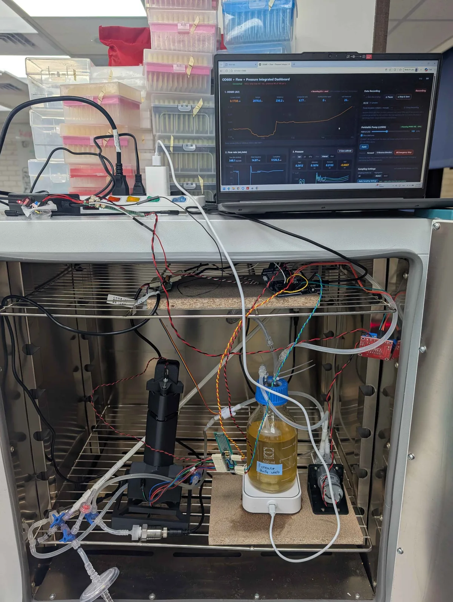
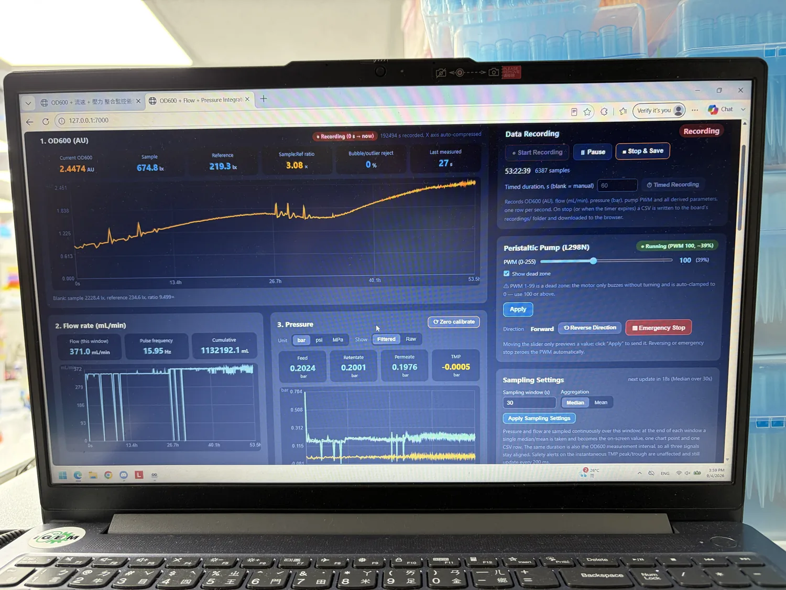

Show details The run read end to end, what the flat pressure does and does not prove, and where the secretion claim stands.
| Reading | At 06:58 | At 53:22:39 |
|---|---|---|
| OD600, in line | 0.1738 AU | 2.4474 AU |
| Sample and reference | 2070.6 and 236.2 lx, 8.77× | 674.8 and 219.3 lx, 3.08× |
| Bubble and outlier rejection | 0 % | 0 % |
| Flow, current window | 348.1 mL/min | 371.0 mL/min |
| Cumulative volume | 5.1 L | 1,132.2 L |
| Feed, retentate, permeate | 0.2412, 0.1874, 0.2133 bar | 0.2024, 0.2001, 0.1976 bar |
| Transmembrane pressure | −0.0007 bar | −0.0005 bar |
| Pump | Peristaltic at the same duty cycle, forward, for the whole run | |
Three rows carry most of the result. Bubble rejection stayed at zero for the whole run, which is the fault the photometer’s first three builds were destroyed by. Transmembrane pressure did not move: three sensors that agree to within 0.005 bar at the start still agree at the end, after 1,132 L. And the pump never changed setting, so the flow difference between the two columns is the loop’s own behaviour and not an operator.
A flat transmembrane pressure across the run is the first fouling datum this project has. It is a weaker claim than it sounds: the membrane is 0.2 µm and the loop runs at essentially zero pressure difference across it, so what it shows is a hundred and sixteen hours without fouling under mild conditions. It also sits beside a sensor the same run reports as untrustworthy, so it is a difference that held, not an absolute pressure anyone would quote. It rules out the failure mode that would have stopped the run; it does not predict a season in a field. One earlier test stands behind it: on 16 August the module was run on pure water across eight flow settings, twice, once fitted and once replaced by plain tubing, which showed that the valves, fittings and flow cuvette account for 46 to 55 % of the total pressure drop. Not subtracting them would overstate the membrane’s resistance by nearly a factor of two.
October gave it a second, better datum. Over 42 hours from the 14th to the 16th, the pressure the module needs beyond what clean water needs at the same flow rose from 2.0 to 3.8 kPa, with two excursions where the permeate line was opened. That is the rising trend a fouling measurement is supposed to show, and it is measured against a clean-membrane sweep taken on the same module, so the valves and fittings come out of the number instead of being left in it. It is still one run on one module. Nothing had to be cleaned, no replacement interval follows from it, and none of the controller’s fouling thresholds has been reached by anything we have run: permeability below 70 % of steady state, friction or shear ratio above 1.3.
Because the shell side exists and can be sampled, this rig is the only apparatus in the project that can be asked whether something crosses a membrane.
What the two machine builds added
September’s run was every subsystem switched on at once with a person watching. What went on the machine after it is the part that lets the person look away, and cycles 6 and 7 are the runs on it. Five bus servos replaced hands: one on the pinch valve and four on the membrane’s own Luer valves, each with three positions, among them the shell sampling valve and the feed valve. pH control came with them, and it is deliberately one-sided. It adds base, with no acid and no carbon dioxide, so a pH that climbs raises an alarm and nothing else. It doses below the target minus the deadband, then waits at least a minute and until the pH has stopped moving before it doses again, and if three pulses in a row fail to shift the pH it latches a fault and stops: an empty base bottle and a blocked line look the same from the controller, and both of them want a person. Everything is driven from one web interface on the board, in English or Traditional Chinese, with a seven-inch screen on the machine for the times nobody has a laptop.
Where the interlocks live matters as much as what they check. A pinch that drives lumen-in pressure or transmembrane pressure past its limit for five samples running, a pinch held past the maximum pinch time, a servo over its thermal cut-out, a servo that fails to answer three times: each releases the valve and latches a fault, and pinching is refused until a person clears it. A pressure trip is separate and harder: any one of the three pressures over the trip limit for five samples stops both pumps, releases the pinch and refuses every pump command above zero until the pressure has come back down. These run on the microcontroller, not in the browser and not on the Linux side, so they hold when the interface dies; and rebooting clears the microcontroller’s latch but not the other, which is the detail that stops a reboot from restarting a pump in an empty room.
The same document lists what the machine still will not do. There is no level sensing and no closed-loop feeding, so the reservoir and the permeate bottle are watched by an operator. No cleaning protocol for the membrane exists: a fouled module is replaced, not cleaned. Pressure monitoring is not allowed to stand in for looking: the bench and the incubator floor are checked by eye at every round, and again before a run is left alone. And the shell side is plated on the first run after every module change, with the harvest treated as live culture until that plate has grown nothing, because a 0.2 µm pore sorts by size and the only thing it is known to hold back is a whole cell.
| Parameter | Value |
|---|---|
| Membrane | mPES hollow fibre, 0.2 µm pore, 200 cm² over 11 fibres |
| Working volume | 1 L, at 37 °C in an incubator, stirred at 200 rpm |
| Feed pressure at working flow | 0.10 to 0.25 bar, with retentate and permeate below it |
| Transmembrane pressure | A few kPa in normal operation, read as a trend |
| Pressure trip | 0.70 bar by default, adjustable 0.1 to 5.0 bar |
| Pinch limits | 0.5 bar on transmembrane and lumen-in pressure; 900 s maximum pinch |
| pH control | Target 7.00, deadband 0.05, base only, up to twelve doses an hour |
| Optical density | In line at 600 nm through a 2 mm cuvette, raw output, not traceable |
| Growth rate | Least-squares slope of ln(OD600) over 60 minutes |
| Fouling alarms | Permeability below 70 % of steady state; friction and shear ratios above 1.3 |
| Logic | 3.3 V, not 5 V tolerant; motors and servos on a separate 12 V rail |
The run was stopped early and still produced the only measurement that puts a protectant on both sides of the membrane
- Result
- Stopped at 37.5 h logged across four files, with OD and pH unusable after about ten hours. ELISA read ACC deaminase at 10.7 µg/mL in the lumen and 10.5 on the shell side, and the DNPH assay found activity on both sides. The rewired transducers read stably.
- Changed next
- Sample the shell side only. The medium went back to 500 mL to test oxygen limitation, and KOH dosing went in to hold the pH.
Design
This cycle answers cycle 5 and the Owl Lab electronics review at once, so the changes come in three groups. The host strain changed from B. subtilis 168 to B. subtilis WB800, which is deficient in secretory proteases, so we expected it to stop degrading its own ACC deaminase and show the yield 168 could not.
The pressure transducers had read unstably, so they now run on 12 V DC instead of 5 V, grounded on the DC-DC module instead of the Arduino Uno Q. The old power supply could not deliver the current the motors and pumps need once valve and pump control were added, and the mainboard Owl Lab proposed supplies both the voltage and the current. Servo control moved from a PCA9685 driver to STS3215 servos over UART on the same advice, because a driver that reaches only 85° when commanded to 90° leaves a valve off its position, and a valve off its position can spike pressure enough to burst tubing.
Two parts were added, both plugging into the mainboard as modules: a pH probe and a servo-driven pinch valve. The valve raises the transmembrane pressure to drive product from the lumen side to the shell side, closing the gap Professor Chang identified in June, which is that raising the flow rate only recirculates fluid and generates no outward pressure. The medium volume went from 500 mL to 1 L, still at 37 °C.
Build
The shell side now drains to a reservoir that collects the product. The lumen side carries three pressure transducers, one flowmeter, the in-line photometer, the pinch valve and the pH probe. The pinch valve is a printed body holding an STS3215 12 V servo motor, and it clamps the return line about 50 mm from the lumen outlet. The pH probe sits in a slot in the culture bottle’s cap, and the dosing pump at 5 mL/min draws from a small KOH bottle through a Luer valve into the same return line.
The electronics are built around the mainboard, an extension of the Uno Q with room for design changes, which replaced the two-board Mega 2560 proposal after Owl Lab’s second review. Every sensor was reworked to plug into it as a module. The strain was B. subtilis WB800 carrying
pSTK-EXP1-SamyQ-AcdS-v2t1, with erythromycin at 5 µg/mL. Permeate was drawn at 24 mL/min.Test
The pH and OD readings were unstable throughout, so the run was stopped early: 37.5 h logged across four files. The in-line OD600 rose from 0.10 to 0.30 over the first nine hours and then stopped tracking growth, with more than 20 % bubble interference in about one measurement window in six and the reference beam varying by a factor of 4.8. The pH fell from 6.55 to about 6.22 over the first eight hours before the trace broke up.
ACC deaminase was measured on both sides by two assays. The DNPH assay reads enzyme activity through the α-ketobutyrate released when ACC deaminase breaks ACC down, and we adopted it on Professor Chang’s advice as a way to show the protectant is made. The ELISA reads the amount of protein. The pressure transducers read stably in this run.
Learn
The bacteria made ACC deaminase in the loop, about 10 µg/mL by ELISA in this one run, and the DNPH assay found activity on both sides. Because the shell side held about as much of each protectant as the lumen side, later runs sample the shell side only, which removes a contamination route and simplifies the setup.
A later run read both ports again on a fitted standard curve and agrees: the lumen side gives 7.7, 8.5, 6.3 and 4.5 µg/mL at 1, 16, 24 and 40 h and the shell side 5.7, 8.0, 6.6 and 5.5. Two runs now put the same order of protein on both sides of the wall, so sampling the shell side alone loses nothing. The run sampled from the shell side alone held ACC deaminase for 72 hours.
The rewiring fixed the transducers, so no further change is needed there. The pH shifted during the run and needs confirming. Few bubbles formed in the medium reservoir, so we suspect oxygen limitation, and the next cycle takes the reservoir back to 500 mL to test that: the surface available for oxygen diffusion is the same whatever the volume, while the amount of bacteria scales with it.

This is the only run on record that measures a protectant on both sides of the membrane in the same experiment. It is one run, and it was cut short.
Show details The two assays read out, why two ELISA records disagree about the ports, and an open query on the gene circuit.
The ELISA measured ACC deaminase and the team’s two other protectants in medium from both sides. Each read about the same on the shell side as in the lumen.
| Protectant | Lumen | Shell |
|---|---|---|
| ACC deaminase | 10.7 | 10.5 |
| LEA14 | 5.8 | 5.9 |
| BoPep4 | 6.2 | 5.4 |
The DNPH assay detected ACC deaminase activity on both sides, read as α-ketobutyrate against its standard curve. Shell-side values stayed between 0.16 and 0.29 mM across four samples; lumen values ran from 0.25 to 0.60 mM over the first 24 h. The readings sit at the low end of the standard range, 0 to 4.1 mM, and the 40 h lumen sample reads below zero at −0.13 mM, so these activity values are approximate.
Clean curves to thirty-eight hours, and then a valve our own cleaning procedure had weakened broke in half
- Result
- OD600 0.14 to 2.71 by 37 h, a fitted growth rate of 0.286 ± 0.010 h−1 inside the interval registered before the run, and a continuous transmembrane pressure record rising 2.0 to 3.8 kPa over 42 hours.
- Changed next
- Automatic pH correction, and a replication run to document a complete growth curve. That run is still owed, and the integrated runs stop here.
Design
Cycle 6 left the medium too acidic. A pH of 6.5 or lower impairs B. subtilis growth and cell division and the structural stability of the protectant enzyme, so the medium needed a way to be brought back up. The pH probe stayed on the lumen side, and KOH was added whenever the reading dropped.
We also needed sterility without an autoclave, because the assembled loop cannot go into one. This cycle developed a chemical clean-in-place procedure to replace it. After assembly, 900 mL of distilled water and then 100 mL of 35 % hydrogen peroxide are pumped in, mix in the lumen reservoir and circulate for 15 minutes, and a starch-iodide test paper checks for peroxide. The solution is drained through a tube, which is then reattached to close the loop. One litre of distilled water then circulates for 30 minutes per wash, with a fresh test paper after each wash, until no peroxide remains. It usually takes five 1 L washes.
Build
The build followed cycle 6, on the same strain, with one change. We attributed the acidity to oxygen limitation, so the reservoir went from 1 L back to 500 mL: the same surface for oxygen diffusion then serves fewer bacteria. Permeate was halved with it, from 24 to 12 mL/min, which is a flux of 36 LMH across the module, and the photometer’s acceptance gate was running, so readings that fail its checks are dropped instead of being averaged in.
Test
The run started on 14 October 2026. Protectant was drawn from the shell side at hours 1.10 and 18.38. At the 38-hour mark a Luer valve at the start of the lumen loop broke in half, unnoticed at the time, and medium leaked into the incubator.
Before that point the pH and OD curves were reliable, showing growth and the pH response both to growth and to KOH. OD600 rose from 0.14 to 2.71 by 37 h, a fitted growth rate of 0.286 ± 0.010 h−1 over the window from 1.5 to 6.5 hours, which is a doubling time of 145 minutes. That is inside the range we registered before the run: on 1 October we predicted 0.2986 h−1 and set a pass between 0.2705 and 0.3300.
The run also gave the first continuous transmembrane pressure record covering a whole bioreactor run. The pressure the module needs beyond what clean water needs at the same flow rose from 2.0 to 3.8 kPa over about 42 hours, with nothing cleaned.
Learn
The broken valve traces back to our own clean-in-place step. We had assumed that 35 % hydrogen peroxide would be diluted once it mixed in the reservoir, and it passes through the rest of the loop before it is diluted. The valve took it undiluted.
The pH data is what this cycle produced. Because the sensor was reading through the KOH additions, we now know how far the pH shifts after a dose, how long the solution takes to rebalance, and how both behave in a growing culture instead of in a beaker. Those are the three numbers automatic pH correction needs, and that was to be the next cycle.
The timing of the break and the end of the usable optical record coincide, and we do not know whether they are connected. The pressure and flow traces continue past 38 hours and the growth rate above is fitted well before it, so neither depends on the answer.
A growth rate was predicted and registered on 1 October, with a pass band set before the run, and the run came back at 0.286 h−1 inside it. That is the one place on this page where a number was committed to before the experiment that produced it.
Show details What the fouling trend does and does not establish, and the run that is still owed.

The 2.0 to 3.8 kPa rise is the rising trend a fouling measurement is supposed to show, and it is measured against a clean-water sweep on the same module, so the valves and fittings come out of the number instead of being left in it. It is still one run on one module. Nothing had to be cleaned, no replacement interval follows from it, and none of the controller’s fouling thresholds was reached: permeability below 70 % of steady state, or a friction or shear ratio above 1.3.
Neither October run included a B. subtilis 168 control under the same conditions, so the two strains have still never been compared in the reactor, and the yield argument that moved the project to WB800 rests on cycle 6 against cycle 5 rather than on a controlled pair. No samples were taken for cell counting either, so the in-line OD600 has not been checked against a cell concentration.
A fourth integrated run was planned in quick succession, to replicate this result and document a complete growth curve with pH, OD and pressure all reading reliably. It has not happened, so the three runs above are the whole integrated record, and the replication that would make any of their single-run numbers a result is outstanding.
In-line photometer
Nobody sells this instrument, so we built it. It reads optical density straight from the flowing culture, with a reference channel split off before the sample so drift in the source divides out. Six cycles, two of them ended by the same class of mistake made twice. Two instruments came out of them, and both are written down stage by stage with the bench tests that gate each stage: the Pro, which is the one in the reactor loop, and the Slim, which is cycle 8.
Find where each optical component belongs before anything is printed
- Result
- Three measured spacings that became the fixed geometry of every later build.
- Changed next
- The bench layout became a printed instrument in the loop.
Design
We used magnetic helping hands, the clip tool that holds parts locked in place and is normally used for soldering, to hold our amber 600 nm LED in line with a purchased paralleling lens. That gives parallel light, which a 2 mm slit then narrows, so only a small part of the beam carries on through the beam splitter to the two lux sensors.
Build
We locked the LED, slit, beam splitter and both lux sensors in position relative to each other and left only the paralleling lens free to move. Fixing everything else made the lens position the single variable.
Test
With the other components locked down, we shifted the paralleling lens along the axis until the light path steadily illuminated both sensors. Doing that meant nudging the slit and the sensors slightly as well, to bring the path into line. Then we measured the distance between every component and turned the layout into a drawing our drylab hardware team could develop into a CAD model with everything anchored in place.
Learn
We measured the tip of the LED to the focal lens at 5.5 cm, the lens to the center of the beam splitter at 10 cm, and the center of the beam splitter to each sensor at 2 cm.
A horizontal light path gives a bubble nowhere to go
- Result
- Unusable. The readings stepped with bubbles and the baseline drifted under loose mounts.
- Changed next
- Stand the light path up, and tighten the component tolerances.
Design
The light path stays flat and horizontal, since the bench arrangement was already on one plane. And every component stays independently adjustable, because we did not yet trust the cycle 1 spacings to be final.
Build
The whole optical train mounts on a single printed rail. The flow cuvette is plumbed into the recirculating loop with tubing at both ends, so the instrument reads the culture as it passes through.
Test
Data fluctuation was way too drastic due to bubbling within the flow cuvette as well as high tolerance for lenses and beam splitters. The draft marks the run itself: actual data not found.
Learn
Bubbles in the flow cuvette were sitting directly in the beam, and with a horizontal path a bubble had nowhere to go. The independently adjustable mounts were also too loose. Adjustability helped during alignment and hurt everywhere else.
We blamed the optics; the blank was the problem
- Result
- Standing the path up moved the bubbles, and the disagreement with the benchtop instrument turned out to come from the blanking procedure.
- Changed next
- Blank both instruments on the same liquid. The protocol that came out of it, and stayed, is to blank on the run’s own growth medium.
Design
V2 stands the light path up. The LED fires upward through the flow cuvette, so a bubble in the cell rises along the beam axis and leaves the light instead of settling in it. Buoyancy solves the problem; flow does not come into it.
Build
A wide square base plate was printed with a mounting adapter for the rail, so the assembly stands rigidly on the bench with the optical axis vertical. The component seats were tightened so the lens and splitter hold their measured positions.
Test
Two samples were run and compared against the Bio-Drop. The reference channel held at 92.5 lux across both readings. That tells us the source was stable between measurements, so the drop on the sample channel came from the sample and not from the LED.
Learn
We had been blanking ReLEAF against growth medium. The Bio-Drop is calibrated on distilled water. The roughly 20% disagreement we had been attributing to our optics was largely a procedural artifact.
The protocol that came out of it is in the user manual, and it goes the other way: blank on the growth medium the run will use, and blank the reference spectrophotometer on the same medium. What matters is not which liquid, it is that both instruments see the same one; the manual names blanking them differently as the commonest cause of disagreement between the two. Changing the sensor settings, the estimator or the path-length factor voids the blank, and an old blank is flagged for the operator, who decides whether to take a new one.
Show details The two readings, and how the disagreement between our own two records was settled.
| Sample | Reference | OD | |
|---|---|---|---|
| Medium | 660 lux | 92.5 lux | 0 au |
| 2 mL titanium dioxide | 495 lux | 92.5 lux | 62.5 au |
The titanium dioxide is here because it scatters light the same way from one reading to the next: it does not grow and it does not settle out between measurements the way a culture does.
Ten degrees of tilt, and a reference channel that moved when nothing should have moved it
- Result
- The two titanium dioxide concentrations separate cleanly, the difference from the Bio-Drop falls from about 20 % to 8 %, and the reference channel moves 6.4 % between blank and sample.
- Changed next
- Enclose the light path, drive the LED directly, and put real culture through it.
Design
Tilting the whole instrument means no surface inside the cuvette is horizontal, so a bubble has a continuous upward path along the wall and nothing flat to rest against. The tilt went into a wedge under the body, not into the optics.
Build
The body sits on a printed wedge with structural support underneath so it does not flex under its own weight. A dual luer valve with syringes is fitted to the loop, used to bleed gas out before the instrument is started.
Test
The sample channel dropped from 137.63 lux on the blank to 120.44 lux at 1 mL and 111.62 lux at 2 mL, giving readings of 0.3712 and 0.5785 au. The reference channel sat at 17.23 lux on the blank and 18.33 lux on both samples.
Learn
The reference channel is the bigger finding. It moved 6.4% between the blank and the samples, and the reference beam is split off before the sample, so nothing in the cuvette should be able to change it. A reference channel we cannot trust is a reference channel we cannot correct with.
Either the source drifted or the reference path is picking up light it should not see. Room light is the likeliest version of the second: at this build the path is open to the bench and neither sensor is shielded from it, which is what puts covers on V4.
Show details The doubling that was not a doubling, and what static samples cannot tell you.
The instrument responds in the right direction and separates the two concentrations cleanly, so the tilted geometry holds up. Doubling the titanium dioxide only moved the reading by a factor of 1.56, which we cannot yet explain from this data alone.
Everything so far has also been static samples held in the cell. Titanium dioxide tells us the optics work, but it does not move, does not grow, and does not produce bubbles. The instrument has to hold up on culture flowing through the loop over a long run before any of this means anything.
A second blanking error is recorded around the same build: the instrument read about four times high on the reactor because it had been blanked through a cuvette that cannot be cleaned in line. It is the same class of error as cycle 3 and the instrument has no way to detect either, which is a design gap and not an operator gap. What did improve is the diagnosis. The first blanking failure took a rebuild to find; the second took twenty-five minutes, because by then a developer mode could stream both raw channels and rule the optics out.
Positions fixed, path enclosed, and a growth curve nobody had to interrupt
- Result
- An unbroken run past 400 hours on wild-type B. subtilis 168 at 22 °C, with nothing withdrawn from the loop.
- Changed next
- Calibrate the instrument against a reference, on a standard that does not grow.
Design
Component positions are fixed at their default alignment; every mount surface that touches glass is lined with TPU; and snap-in covers run the full length of the light path from LED to sample sensor, so no room light reaches either detector. A photometer that responds to the lights being switched on is not measuring the sample.
Build
The instrument runs on an Arduino UNO Q. Both lux sensors report over the same bus. The interface is a live web dashboard served on the local network, so the run can be watched from any machine without touching the rig.
That build is the Pro, and it is the one the assembly guide describes: a 600 nm LED without an internal resistor, a plano-convex paralleling lens, a 90:10 splitter cube, the 2 mm flow cuvette, and two GY‑302 sensors that share one bus because the board sets each one’s address, the sample at 0x5C and the reference at 0x23. Eight parts print in black PLA, and the seats that hold glass are painted in TPU so the lens, the cube and the cuvette bed into TPU instead of bare PLA.
Test
A continuous run of wild-type B. subtilis 168 at 22 °C, drawn from the bioreactor loop and passed through the flow cell in line, so no sampling event interrupted the culture and no material was removed to measure it. The run passed 400 hours.
Learn
Noise is tight below about 0.4 OD and ragged above about 0.8, so the useful precision is not flat across the range. The rejection rate moved from 42.9% to 14.3% to 0% within one run, and the rejection rule is not yet written down anywhere.
It is written down now, and it has moved on since the run. The specification in the user manual takes four dark readings, turns the source on for 60 ms and takes sixteen lit readings in each window; a reading counts as rejected when it falls more than 5 % below the upper envelope of its burst, and above 50 % rejected the whole measurement is discarded and retaken at once. A second gate sits after it, which refuses a reading whose dispersion or whose jump from the last accepted value is too large and reports the median of the last three accepted values instead. The run’s own three rates belong to the older fourteen-reading burst, where 42.9 % and 14.3 % are exactly six and two readings out of fourteen, so they are a count and not a drift over the run.

Show details The dashboard snapshots, the fault window, one dip nobody can explain, and three durations in our own records.
Snapshots from the run, all from the same experiment. At 3d 7h 57m the dashboard read 586 points, OD 0.7661, sample 171.67 lx, reference 26.67 lx, ratio 6.44x, reject rate 42.9%. At 6d 20h 58m it read 1097 points, OD 0.7683, ratio 6.43x, reject 14.3%. At 7d 21h 28m it read 1244 points, OD 1.1804, sample 141.85 lx, ratio 5.32x, reject 0%.
Between roughly 240 and 300 hours the scatter grew by an order of magnitude, and over the same hours the reference channel fell from 25.8 lux to 9.3, bottoming at 1.4. The first hypothesis was contamination and it was wrong: the recirculation pump had failed, and swapping it knocked the optical axis. Part of that window is the reactor failing and part of it is us, and the reason we can tell the difference is that the instrument’s own reference channel flagged the window as untrustworthy while it was happening. We would rather put it that way than the way we first wrote it, which was that the photometer detected the pump dying: nobody was rostered to look at the trace daily, and the fault was noticed late.
A separate, earlier feature, a fall from OD 0.93 to 0.72 between 120 and 160 hours, has no attribution at all. The optical channel was healthy through it, so it is not the instrument. Lysis followed by cryptic growth, sporulation and germination, and biofilm sloughing all remain open. The measurement that would have separated fouling from biology is a flush and reblank at the end of the run; it was never done, and once the rig was torn down the chance was gone.
The thing the draft asked for and did not have was the calculation itself: whether the reported OD used the reference channel or only the sample against the blank. The photometer record states it, and it uses both. A blank fixes K, the sample reading divided by the reference reading with medium and no cells in the cell; every live reading is then OD600 = −log10[S / (K · R)], so drift in the LED divides out over a multi-week run. The dashboard of this run reported five times that value, and with the factor restored all three snapshots above reproduce on one K of about 9.16.
The ratio flag was half an arithmetic error and half a missing build step. A 90:10 splitter gives a sample-to-reference ratio of 9:1, while the dashboard of this run expected 10:1, so the expectation was set a little high to begin with. The run measured 5.3× to 6.4× throughout, which is low against 9 but inside the band the current app treats as acceptable: the operator enters the split ratio, and the app warns only below half or above double it. What has changed is that the ratio is now something you set, not something you find out afterwards. The assembly guide ends on an alignment step, with the LED turned in its clip under a live reading until sample and reference sit at about 9:1 with neither sensor saturated, and that step is the last thing done before the blank. Had it existed in July, the red flag on the figure above would have been a reading about the culture.
We expected to need a calibration transform, and the data said not to apply one
- Result
- Raw output agrees with the benchtop instrument to a median paired difference of 3.8 %, and both track the mass standard at R² above 0.999.
- Changed next
- Repeat on cells, extend the range, and confirm against the iGEM silicon dioxide standard.
Design
Using culture to calibrate would lead to issues in growth time, settling, or cell lysis, leading us to come up with TiO2 suspension as a stable scattering target. The iGEM standard is done with SiO2, but TiO2 performed nearly exactly the same suspended in 1% SDS solution and was much cheaper.
Build
The calibration loop consisted of a magnetic stirrer, a peristaltic pump, our photometer, and a 500 mL reservoir, whose cap had holes for the inlet, the outlet, a sampling port, and an air hole that prevented a vacuum forming during sampling.
Test
Plotted against mass added, both instruments track the standard at R² > 0.999 (ReLEAF 0.9999, Bio-Drop 0.9998), and plotted against each other the raw points fall along the line of identity, agreeing to a median paired difference of 3.8%.
Learn
We originally expected the ReLEAF readings would need a calibration transform; instead the two runs showed that no calibration is needed. Fitting our readings to the Bio-Drop would tie them to the reference instrument’s own measurement error. A calibration step could make the readings worse.
The decision survived into the shipped instrument, and the manual says what it costs: no calibration curve against a reference spectrophotometer is applied, so the optical density the reactor logs is raw output, linear across the working range and not traceable to any reference instrument. It also names where that stops holding. At high cell density the source and the sensor are not linear together, so the top of the range has to be checked with a dilution series and never assumed.
Show details Two exclusions made on objective grounds, what the two runs each probed, and one accuracy claim that still has to be reconciled.
Two single points were excluded, each on objective grounds, and both stay in the figures as open markers. In Test 1, the mg = 37 Bio-Drop reading is a handling error, off the trend of its neighbors. In Test 2, the mg = 5 Bio-Drop reading violates monotonicity, it exceeds the readings both above and below it, which is impossible for an increasing standard. In both cases, the paired ReLEAF reading is on trend.
The raw, uncalibrated ReLEAF output already sits near one-to-one with the reference and tracks the ground-truth mass standard with a residual scatter comparable to the Bio-Drop’s: in Test 1, across 2 to 40 mg, 0.030 OD600 for ReLEAF against 0.031 for the Bio-Drop. A line fit through the raw Test 2 points scatters by an RMSE of 0.011 OD600 about the line of identity, which measures how tight the raw agreement is and is not a correction applied to anything. The SiO2 calibration we deferred remains available as a future check, but on the strength of the TiO2 comparison it would only confirm what we already have.
Cycles 7 and 8 are named on the reactor record. Cycle 7, the silicon dioxide calibration deferred above, ran on 10 October 2026: against the reference the current build is one to one to OD 2.5 (slope 0.995), and the numbers are on the photometer page.
Cycle 8, the simplified photometer, has a build. The reasoning that started it was a cost argument: three parts carry most of the price, the flow cuvette earns its own because it is what lets the instrument read the loop live, which left the paralleling lens as the part to remove. What the Slim actually removes is both of them. One 600 nm fiber illuminator feeds two PMMA fibers, one across the culture in the same 2 mm flow cuvette to the sample sensor and one across an empty chamber to the reference sensor, so the splitter goes as well as the lens and the reference channel survives. The electronics are the Pro’s, unchanged: the same Uno Q, the same two GY‑302 sensors on the same two addresses, the same app. The body is a third of the Pro’s filament, 124 g of PLA against 363 g.
It reads, and it does not read on the Pro’s scale. The Slim sits at about a fifth, and one silica standard puts the two together at Pro ≈ 5.57 × Slim − 0.07. That factor rests on one standard on a stable scatterer, with nothing from a culture behind it, so it is a conversion and not yet a validation. The split between the two fibers is also not fixed the way a cube’s is: bump or reseat a fiber and the instrument has to be blanked again. What the Slim costs to build is not written down anywhere; what it displaces is, at about US$370 for the Pro the long run was made on and NT$15,000, roughly US$470, for the Bio-Drop that Pro was checked against. The Pro stays in the reactor loop.
Light plate apparatus
The light plate apparatus (LPA) is a testing apparatus, not part of the control loop. It exists to answer one question: how the wavelength and intensity of applied light affect protectant production in engineered B. subtilis. Four cycles took it from two LEDs on a breadboard to a US$65.52 instrument that lights twenty-four cultures under six defined conditions, with its intensity tiers set in code and each well shielded from its neighbours. The build is written down stage by stage, with its three bench tests and the duty cycle of each tier, in the LPA assembly guide.
Put a green and a red LED in every column and see whether the idea works at all
- Result
- The concept holds. Nothing about it is quantitative: output was uncontrolled and external light was not blocked.
- Changed next
- Measure every LED, sort them into matched groups, and shield the cultures.
Design
Put a green and a red LED in each column so we can switch between them quickly and exercise the on and off control of protectant production directly. Nothing is calibrated at this stage, because the question is whether the concept works at all before we spend effort making it precise.
Build
Dual LED per column, allowing for quick adjustment from Green to Red light output. Wire management prints, included from the start, since even at this size the harness gets unmanageable fast. The array was driven straight from a breadboard.
Learn
Output consistency between LEDs was not controlled. External light was not blocked.
Internal-resistance variance is a common problem in cheap single-bulb LEDs: nominally identical parts draw different currents and emit different intensities at the same drive level. As long as that is true, an intensity tier is not a real quantity, and the wavelength comparison is not fair either, since the green and red channels would be running at unknown relative brightness. Ambient light adds an unknown amount of illumination to every tube, and it lands hardest on the low-intensity condition, which is exactly where the separation has to be cleanest.
Twenty LEDs sold as identical spread by a quarter, so the intensity tiers had to come from software
- Result
- Green ran from 2.01 to 2.54 kLux and red from 360 to 438 lux, spreads of 26 % and 22 %. Sorted into fours, each group holds to about 1 to 2 %.
- Changed next
- Set the tiers by pulse-width modulation, and enclose the electronics.
Design
The approach is to measure the light output of every LED individually and use that to identify units with similar internal resistance. From the matched units we form three groups of four per wavelength, one group per intensity tier, arranged as columns. Because the LEDs within a column are matched, the column can be recalibrated as a unit through straightforward mathematical adjustment, so that every column at a given tier matches every other: that is what turns low, medium and high from labels into reproducible quantities. Coverage was added to block external light, so that the intensity a culture receives is the intensity we set.
Build
Every LED was driven at 5 V and measured individually on a lux meter using a printed sensor fixture, so each reading is taken at the same distance and orientation. Each LED carries a tag made of its row and its column, rows A to D running downward and columns 1 to 5 across, so any physical LED can be traced back to its own measurement. The array was then rewired with the matched units grouped into columns.
Test
All twenty green LEDs were read in kLux and all twenty red in lux, at 5 V, one at a time, and the grids are in the details below, laid out by measurement tag and not by the array’s own 4 × 6 grid. Sorting those into groups of four by output gives the matched sets the tiers are built from, and the six channels were read again after rewiring.
Learn
Sorting by measured output tightens each group considerably: the green low group holds 2.33 to 2.34 and the green mid group 2.35 to 2.37, well inside 1%, and the red groups hold to about 2% each. But the separation between tiers is smaller than we need. Green low to green high is about 4% and red low to red high about 10%. Those gaps are the parts’ own spread after sorting; they are not three distinct light levels. The tiers therefore have to come from the PWM duty cycle rather than from LED selection: matching makes the four LEDs in a column agree with each other, and software sets how bright that column runs.
Matching is now a standing build step, repeated for every plate: buy twenty LEDs of each colour, read every one at 5 V through a 10 mm aperture taped over the meter, label each with its reading and keep the closest twelve. The guide asks the four LEDs of a group to read close together and records what our own build managed, 0.4 % to 1.8 %; the spare eight of each colour are what makes that possible.
Show details The full measurement grids, and the group that would not tighten.
| 1 | 2 | 3 | 4 | 5 | |
|---|---|---|---|---|---|
| A | 2.54 | 2.19 | 2.33 | 2.40 | 2.40 |
| B | 2.37 | 2.11 | 2.34 | 2.48 | 2.33 |
| C | 2.01 | 2.37 | 2.38 | 2.42 | 2.36 |
| D | 2.33 | 2.05 | 2.35 | 2.45 | 2.20 |
| 1 | 2 | 3 | 4 | 5 | |
|---|---|---|---|---|---|
| A | 431 | 371 | 424 | 393 | 438 |
| B | 400 | 380 | 430 | 397 | 360 |
| C | 410 | 410 | 360 | 416 | 397 |
| D | 411 | 390 | 360 | 388 | 428 |
| Green low | Red low | Green mid | Red mid | Green high | Red high |
|---|---|---|---|---|---|
| 2.33 | 0.390 | 2.35 | 0.410 | 2.38 | 0.424 |
| 2.33 | 0.393 | 2.36 | 0.410 | 2.40 | 0.428 |
| 2.33 | 0.397 | 2.37 | 0.411 | 2.40 | 0.430 |
| 2.34 | 0.397 | 2.37 | 0.416 | 2.42 | 0.431 |
The green high group spans 2.38 to 2.42, about 1.7%, against 0.4% and 0.9% for the other two green groups. It is the leftover group, made of what did not match anything else.
What remained after this cycle was also practical. The electronics were still exposed, intensity was still set by hand, and there was no dedicated way to hold the test tubes in a repeatable position over the array.
Twenty-four cultures under six defined conditions, and then a night on a shaker took the base apart
- Result
- An instrument that can be handed to someone else: enclosed electronics, code-set intensity, and a holder that fixes the distance between LED and culture. The overnight run on a shaker snapped a post off the bottom plate, pulled wires loose, and leaked light between the wells.
- Changed next
- Repeat that overnight run on the repaired base, measure photon flux, not lux; check uniformity between wells; run the circuit under it.
Design
An outer frame print houses the LED wiring and the perf board, so no electronics sit loose on the bench. Light intensity is varied in code, so a run is defined by a set of values, with nothing for anyone to remember to adjust. Slider prints carry the LED holder and the tube holder, so the stack comes apart for rewiring. A tall print holds the test tubes at a fixed position over the array, so the distance between LED and culture is the same every run.
Six parts are printed, all in black PLA Matte on the same profile, and the tube holder is printed at four wall loops so that no light crosses between wells. A screwdriver is the only tool the assembly itself needs; the soldering iron is for the four M3 heat-set inserts that take the perf board.
Build
Control runs from an Arduino Uno R4 WiFi. PWM signals from the Arduino drive three MOSFETs, one per intensity tier, and software sets the duty cycle for each tier. The selected intensities are held constant for the duration of a test, so each culture receives a fixed, well-defined dose; three calibrated tiers across two wavelengths give six defined light conditions per run.
The switching stage moved with the build. In cycle 2 the three MOSFETs stood on a breadboard on the bench beside the LED holder; here they sit on the perf board underneath it, with the housing over them. Each tier is one IRLZ44N on its own Arduino pin, and the run sketch writes one value per pin and never changes it again, so the dose a tube receives is set by three numbers in the source.
The three tiers as the run sketch sets them, rounded. Each tier is a green column and a red column of four tubes. Tier Pin Written Duty Low D9 5 2 % Medium D10 31 12 % High D11 255 100 % Test
During our overnight test run, the connection point on the bottom plate broke off. The LPA was on a shaker for the run; the frequency was most likely too high for the printed post. Several wires came undone and had to be resoldered. The white tube holder print also allowed light to leak into neighbouring holes, which compromised our data, as the test tubes were receiving light from more than one source.
Learn
All four screws on the bottom plate are now used, not two, which spreads the load across four points instead of concentrating it on a pair, and every soldered connection was reinforced. Neither change has been through a second overnight run on the shaker, so the repair is untested. The white tube holder was replaced with a black one, and its wall thickness increased from two loops to four.
Both repairs are the build now: the assembly guide screws the base plate to the housing from underneath with four #10‑32 screws through the middle of each edge, and prints the tube holder in black at four wall loops. Three bench tests go with it, one after the LEDs are soldered, one after the MOSFETs are wired, and the second one again once the stack is screwed together, so a column that stops answering its MOSFET is caught before a culture is in the tube. None of that is the overnight run, which is still the test this cycle owes.

Show details What the team now counts as success, the unit the readings are in, and what this apparatus cannot do by design.
This changed our definition of what it means for the LPA to be functional. Having 24 LEDs turn on and produce different readings is not enough. We need to establish the actual photon flux at each condition, verify illumination uniformity between wells, and determine whether the selected conditions actually produce the expected changes in protectant expression.
The last of those is the induction run this track was built for. It has since been done on this apparatus, with the Level 2 strain, and is reported on Results: the signal rises with time under green light but not in an ordered way across intensities, so what the page still waits on is a dose in photon flux and a loading-normalised curve. Earlier faults in the same build are recorded and fixed: one green and red column stopped answering its MOSFET and two ran very weak until the MOSFET was changed, the assembly and disassembly is slow, and the jumper wire on the MOSFET spike sits loose.
Every reading on this track is in lux, which is weighted for human vision and peaks near 555 nm, so the weighting error is not the same size on the green channel as on the red. The dose that matters to the cells is photon flux, in µmol m−2 s−1. The team found this in week 16; until the readings are converted they compare our LEDs with each other and cannot be compared with a published dose.
The black holder, the four-point base and three calibrated tiers, specified end to end for US$65.52
- Result
- Twenty-four cultures under six fixed light conditions, two wavelengths at three intensities with four replicates each, from one Arduino and three MOSFETs. Six printed parts, a screwdriver to assemble, and US$65.52 in parts and filament.
- Carried forward
- This is the apparatus the induction series ran on, and the build another team can reproduce from the assembly guide.
Design
The final build combines what the three cycles established: LEDs matched by measured output, intensity set by PWM in code, enclosed electronics, a fixed tube position, and a black holder that shields each well. Two changes carried in from cycle 3 define it. The base plate is screwed to the housing at four points instead of two, which spreads the load across the whole edge, and every soldered connection is reinforced. The tube holder is printed in black PLA at four wall loops, with a 1 mm wall between bores, so light from one well stops at the wall instead of reaching its neighbour.
The geometry follows from the question the apparatus answers. Four wells per condition give four replicates; six columns on an 18 mm pitch give two wavelengths at three intensities; and a tube bore of 17 mm over its own LED fixes the distance between source and culture, so a condition is a number in the source and not a position on a bench.
Build
Six parts print in black and grey PLA: a base plate that closes the bottom and carries the perf board on four stands, two sliders that pass through the housing and carry both holders, the housing itself, the LED holder on its 18 mm grid, and the tube holder. The bought part is the perf board under the LED holder, which carries the three IRLZ44N logic-level MOSFETs. Assembly takes four M6, four #10-32 and four M3 screws, and a screwdriver is the only tool it needs.
Twenty-four LEDs sit in PCV-220 sockets, matched in fours from forty measured one by one. An Arduino Uno R4 WiFi drives the three MOSFETs, one per tier, and each MOSFET switches a green and a red column together.
The apparatus as the assembly guide specifies it. Parameter Value Array 4 × 6 on an 18 mm pitch, 24 cultures Light conditions 6: green and red, each at low, mid and high, with 4 replicate tubes each LEDs 24 in PCV-220 sockets, matched in fours from 40 measured individually Intensity control PWM per tier, set in code before a run and held constant: pins 9, 10 and 11 at analogWrite 5, 31 and 255, about 2 %, 12 % and 100 % Controller Arduino Uno R4 WiFi Drivers 3 × IRLZ44N logic-level MOSFETs, one per tier Tube bores 24 × 17 mm, 1 mm wall between bores, 4 wall loops, black PLA Footprint 211 × 164 mm, 217 mm across the sliders Height 108 mm without the tube holder, 188 mm with it Printed parts 6, in black and grey PLA Cost US$65.52, which is US$44.06 of parts and US$21.46 of filament Test
The matching is measured. All forty LEDs were read one by one on a light meter in a printed fixture, at the same distance and orientation, and sorted into matched fours. Within a group the four LEDs differ by 0.4 to 1.8 %, against spreads of 26 % for green and 22 % for red before sorting.
Three bench tests are built into the assembly, one after the LEDs are soldered, one after the MOSFETs are wired, and the second again once the stack is screwed together, so a column that stops answering its MOSFET is caught before a culture is in the tube.
The apparatus then ran cultures. B. subtilis WB800 grew under all six arms to OD600 0.91 to 1.01 at 24 hours, close to the fitted plateau of 1.005, and the induction series that followed is on Results.
Learn
A commercial light plate apparatus is an expensive instrument, and the point of this one is that it is not. Six printed parts, one Arduino, three MOSFETs and US$65.52 give twenty-four cultures under six defined conditions, and the whole build is written down stage by stage in the assembly guide, with the duty cycle of each tier and the three bench tests, so another team can reproduce it rather than buy it.
What the apparatus reports is the duty cycle it was set to, which is a stable and repeatable dose but not a photon flux. Putting the tiers in absolute units, and measuring uniformity between wells, is the measurement that would let these conditions be compared with another group’s. That is the next thing this instrument is for.

Show details The six printed parts, and the first culture run arm by arm.
| # | Part | What it does |
|---|---|---|
| 1 | Base plate | Closes the bottom and carries the perf board on four stands, screwed to the housing at four points. |
| 2 | Left slider | Passes through the housing’s side and carries the LED and tube holders. |
| 3 | Right slider | The same, on the other side. |
| 4 | Housing | Encloses the LEDs and the electronics from outside light. |
| 5 | LED holder | Holds the 24 LEDs in their sockets on the 18 mm grid. |
| 6 | Tube holder | Holds each tube over its own LED, black at four wall loops so light does not cross. |
| 7 | Perf board | Bought, not printed. Carries the three MOSFETs under the LED holder. |
| Arm | Light | OD600 at 24 h |
|---|---|---|
| R1 | Red, low | 0.967 |
| R2 | Red, medium | 0.910 |
| R3 | Red, high | 0.967 |
| G1 | Green, low | 1.014 |
| G2 | Green, medium | 0.975 |
| G3 | Green, high | 0.958 |
That run was carried out on the cycle 3 apparatus with its white tube holder, which is why it is read as a growth result and not as a comparison between arms: the light each tube received came from more than one source. The black holder in this cycle is the change that makes the arms separable, and the Measurement page carries the procedure the run followed.
Hydroponics box
Where the protectant finally arrives. Four cycles on the tank and the printed plate that holds thirteen Arabidopsis seedlings at one depth however much medium is left. What was then grown on it is on Plants.
Three vessels that each hid something the operator needed to see
A hydroponic tank has to be dark for the roots and legible for the person running it, and the first three boxes could not be both at once.
- Result
- Three boxes tried and dropped: a 21.1 × 14.1 × 11.4 cm opaque tub, a 7.5 cm bought box that leaked, and a 6.5 × 6.5 × 10 cm clear box too narrow to grow in. A 1000 µL tip box replaced all three.
- Changed next
- Keep a clear tank and find the darkness somewhere else.
Design
The vessel has to hold enough ½ MS medium to last a run, keep light off the roots, leave board area for as many seed positions as a run needs, and come back from the autoclave intact so it can be used again.
Build
Prototype 1 was a large opaque tub, 21.1 × 14.1 × 11.4 cm, filled with about 500 mL of ½ MS medium under a foam board cut from sheet and taped black, carrying five agar-containing seed holders. Prototype 2 was a small bought box, 7.5 × 7.5 × 5.3 cm, with holders for the lids and labels on the box lid. Prototype 3 was a tall clear box, 6.5 × 6.5 × 10 cm, with a square black-taped foam board.
Test
The first box wasted most of what it offered: the board had room for more seed holders than the five we used, the foam was too fragile to reuse, and cutting and taping it was slow and hard to scale up. The depth of the box made the root system difficult to observe, and the black wall made it difficult to tell when the medium went turbid. Prototype 2 leaked from two sites when the box was moved, the joint and the bottom, and black tape over the hole did not stop it; the lid fell into the box unless it was placed at a specific angle. Prototype 3 held opacity and depth together, and then the foam board fitted so tightly that it was hard to reach when the medium was changed, and the box was too narrow for the plants to grow and limited how many we could run in it.
Learn
A 1000 µL tip box answered all of it at once. It is 12.8 × 10.1 × 9.5 cm, which does not take up much space and still gives the roots room; it is transparent, so the root system and the turbidity of the medium can both be read off the wall; it survives cleaning and autoclaving, so it is reused; and one board in it carries anything from 5 to 13 holes. Contamination was less frequent than in the two boxes before it.
What a clear wall gives up is the darkness the roots need, and that debt is paid in cycle 4 from outside the tank.


A board cut by hand, set to a level by eye, and softened by the medium it sits on
Every hydroponic run starts with the same question: where are the roots in the liquid? A fixed board answers it once, on the day the run is set up, and then the answer drifts for a fortnight.
- Result
- Foam boards for every box, and three plates cut, taped and drilled at 300 mL, 1.5 L and 2 L. The level was set by hand before each run and topped up during it, and the foam went soft and broke in the water.
- Changed next
- Print the board, and put the flotation inside it so there is no level left to set.
Design
Labs that grow Arabidopsis in liquid medium improvise the holder: a piece of foam cut to size, a mesh taped over a container, or a fixed plate sitting above a reservoir. Conn and colleagues [6] set out the version we started from, seeds germinated on agar in punched tube lids and then moved onto a board. We did the same, and sized a plate for each of the three box volumes we had on the bench.
Build
Foam cut to the box, taped black, and drilled on a grid of seed positions; the agar-containing seed holders dropped into the holes. Three plates, for the 300 mL, 1.5 L and 2 L boxes, each hand-labelled in red tape. The medium sat underneath at a level set by eye before the run.
Test
The level turned out to be a narrow window. It has to sit just under the board and as high as it can be got: too low and the roots lose contact, too high and the board floods. And it does not stay where it is put. The plants drink and the medium evaporates, so a level that was right at the start of a run is wrong by the end of it.
The foam failed separately. It became soft after it stayed in the water for a long time, and a softened board breaks in the middle of changing the medium.
Learn
Two faults with one answer each. Somebody has to watch the reservoir and top it up, and every top-up is a chance for conditions to drift between replicates, which is the variable the board was there to remove in the first place. And a board cut, taped and drilled for one box is not a part another lab can make the same way twice. So print the board, and stop setting a level at all.

Sealed air inside the frame, and four corner poles to trim what the arithmetic got wrong
If the board floats, the roots stay at the same depth however much liquid is left, and nobody has to top anything up. The question that replaces the level is the freeboard: how high the plate rides.
- Result
- A printed plate that floats on its own frame. The calculation did not get the freeboard right; washers did.
- Changed next
- Run the displacement calculation again on every design change until the poles are not doing anything.
Design
Move the flotation into the frame: sealed air chambers that are part of the structure, with nothing to glue on and nothing to come loose in the medium. Sizing them is a displacement problem. The plate has to displace its own mass, plus the seedlings, plus whatever water the printed part takes on, while sitting at the freeboard that puts the roots in the medium and the crowns above it.
Build
Printed in PLA on a standard FDM machine, pontoons hollow at 15 % gyroid infill with a teardrop cross-section that prints without support. A pole at each corner took washers, so the freeboard could be trimmed after printing without reprinting the whole part. A handle went on each side of the board, so the plate could be lifted out to change the medium without anyone touching the seedlings.
Test
It floats, and the corner poles get used. One worked case from the drafts has the plate at roughly 180 g, where the pontoons came up short by about 10.7 cm³ of volume each. The printed plate was never weighed, so the case cannot be checked against the part that exists.
Learn
The poles are the safety margin on a calculation we did not trust yet. They are also four parts, four washers and a decision per run. Every change to wall thickness or footprint moves the mass and the displacement at the same time, so the calculation has to be rerun on every design change, not once at the start.
The ballast poles came off, and the clear tank went inside a box that keeps the light out
The last change to the plate is a subtraction and the last change to the tank is an addition. Tuning the sealed volume closely enough makes the corner poles redundant, which removes four parts, four washer stacks and one judgement call per run; a black outer box gives back the darkness the clear tip box gave up in cycle 1.
- Result
- Sixteen printed parts, 42.27 cm³ of sealed air, 3.5 g of added load per millimetre of draft, and the tip box sitting inside a 14.7 × 11.5 × 6.2 cm light-blocking box.
- Changed next
- Weigh an assembled plate and read its freeboard off the load line, which is the one measurement that would close this track.
Design
Smaller footprint, clip-in handles so the plate lifts out of the reservoir without anyone touching the seedlings, and thirteen seed positions in rows of four, five and four. The buoyancy is computed from the STLs, not estimated: the two chambers hold 42.27 cm³ of sealed air, and down the pontoons’ straight sides the hull gains 3.51 cm³ per millimetre of draft.
The sealed air, in violet, is the whole of the flotation. Nothing hangs under the middle of the plate. Build
Sixteen parts in PLA, no supports, no adhesives and no fasteners. As drawn, the waterline sits 6.0 mm under the slab, a freeboard of 9.2 mm, where the assembled plate displaces 54.2 cm³.
The tip box then goes inside a black light-blocking box of 14.7 × 11.5 × 6.2 cm with a notch cut in one side. Keeping the tank dark holds back algal growth, and the clear inner box still lifts out when we want to look at the root system.
Test
The plate carried the salinity and heat assays on Plants: four boxes side by side on four identical plates, photographed from above through the run. No run on this plate has had its freeboard measured.
Learn
Every 3.5 g added sinks it about 1 mm, so the sensitivity is known and the load line is drawn; what is missing is one weighing. Printed solid, an upper bound, the sixteen parts come to 92.6 g and would float with 1.9 mm of freeboard, which is the number that retires the 180 g worked case still in the drafts.


References
- Castillo-Hair, S. M., Baerman, E. A., Fujita, M., Igoshin, O. A., & Tabor, J. J. (2019). Optogenetic control of Bacillus subtilis gene expression. Nature Communications, 10(1), 3099. https://doi.org/10.1038/s41467-019-10906-6
- Haller, D. J., Castillo-Hair, S. M., & Tabor, J. J. (2025). Optogenetic control of B. subtilis gene expression using the CcaSR system. Methods in Molecular Biology, 2840, 1 to 17. https://doi.org/10.1007/978-1-0716-4047-0_1
- Weber, E., Engler, C., Gruetzner, R., Werner, S., & Marillonnet, S. (2011). A modular cloning system for standardized assembly of multigene constructs. PLoS ONE, 6(2), e16765. https://doi.org/10.1371/journal.pone.0016765
- Caro-Astorga, J., Rogan, M., Malcı, K., Ming, H., Debenedictis, E., James, P., & Ellis, T. (2025). SubtiToolKit: A bioengineering kit for Bacillus subtilis and Gram-positive bacteria. Trends in Biotechnology, 43(6), 1446 to 1469. https://doi.org/10.1016/j.tibtech.2025.02.004
- Promega Corporation. (2021). pGEM-T and pGEM-T Easy vector systems (Technical Manual TM042, rev. 10/21). promega.com/…/pgem-t-and-pgem-t-easy-vector-systems-protocol.pdf
- Conn, S. J., Hocking, B., Dayod, M., Xu, B., Athman, A., Henderson, S., Aukett, L., Conn, V., Shearer, M. K., Fuentes, S., Tyerman, S. D., & Gilliham, M. (2013). Protocol: optimising hydroponic growth systems for nutritional and physiological analysis of Arabidopsis thaliana and other plants. Plant Methods, 9, 4. https://doi.org/10.1186/1746-4811-9-4
- Fernández, S., Ayora, S., & Alonso, J. C. (2000). Bacillus subtilis homologous recombination: genes and products. Research in Microbiology, 151(6), 481 to 486. https://doi.org/10.1016/S0923-2508(00)00165-0
- Lorenz, R., Bernhart, S. H., Höner zu Siederdissen, C., Tafer, H., Flamm, C., Stadler, P. F., & Hofacker, I. L. (2011). ViennaRNA Package 2.0. Algorithms for Molecular Biology, 6, 26. https://doi.org/10.1186/1748-7188-6-26
- Pearce, G., Yamaguchi, Y., Munske, G., & Ryan, C. A. (2008). Structure-activity studies of AtPep1, a plant peptide signal involved in the innate immune response. Peptides, 29(12), 2083 to 2089. https://doi.org/10.1016/j.peptides.2008.08.019
- Cui, J., Sa, E., Wei, J., Fang, Y., Zheng, G., Wang, Y., Wang, X., Gong, Y., Wu, Z., Yao, P., & Liu, Z. (2024). The truncated peptide AtPEP1(9-23) has the same function as AtPEP1(1-23) in inhibiting primary root growth and triggering of ROS burst. Antioxidants, 13(5), 549. https://doi.org/10.3390/antiox13050549
- Wang, A., Guo, J., Wang, S., Zhang, Y., Lu, F., Duan, J., Liu, Z., & Ji, W. (2022). BoPEP4, a C-terminally encoded plant elicitor peptide from broccoli, plays a role in salinity stress tolerance. International Journal of Molecular Sciences, 23(6), 3090. https://doi.org/10.3390/ijms23063090
- Jeong, H., Jeong, D.-E., Park, S.-H., Kim, S. J., & Choi, S.-K. (2018). Complete genome sequence of Bacillus subtilis strain WB800N, an extracellular protease-deficient derivative of strain 168. Microbiology Resource Announcements, 7(18), e01380-18. https://doi.org/10.1128/MRA.01380-18
- Lu, Y. P., Zhang, C., Lv, F. X., Bie, X. M., & Lu, Z. X. (2012). Study on the electro-transformation conditions of improving transformation efficiency for Bacillus subtilis. Letters in Applied Microbiology, 55(1), 9 to 14. https://doi.org/10.1111/j.1472-765X.2012.03249.x
- DTU-Denmark iGEM Team. (2015). MAGE in Bacillus subtilis 168 [Laboratory protocol]. iGEM 2015. 2015.igem.org/Team:DTU-Denmark
- Duckert, B., Fauvart, M., Goos, P., Stakenborg, T., Lagae, L., & Braeken, D. (2022). High-definition electroporation: precise and efficient transfection on a microelectrode array. Journal of Controlled Release, 352, 61 to 73. https://doi.org/10.1016/j.jconrel.2022.10.001